2026 Submission to UNFCCC
|
4IR |
Fourth Industrial Revolution |
|
AF |
Adaptation Fund |
|
AFOLU |
Agriculture, Forestry and Other Land Use |
|
AI |
Artificial Intelligence |
|
APSR |
The Authority for Public Services Regulation |
|
BAU |
Business-As-Usual |
|
BESS |
Battery Energy Storage System |
|
BTR |
Biennial Transparency Report |
|
BTR1 |
First Biennial Transparency Report |
|
CAA |
Civil Aviation Authority |
|
CBAM |
Carbon Border Adjustment Mechanism |
|
CBDR-RC |
Common but Differentiated Responsibilities and Respective Capabilities |
|
CCUS |
Carbon Capture, Utilization and Storage |
|
CDAA |
Civil Defence and Ambulance Authority |
|
CMA |
Conference of the Parties serving as the meeting of the Parties to the Paris Agreement |
|
CMA.3 |
Third Session of the Conference of the Parties serving as the meeting of the Parties to the Paris Agreement |
|
CP.21 |
Twenty-first Session of the Conference of the Parties |
|
CRT |
Common Reporting Tables |
|
CSRD |
Corporate Sustainability Reporting Directive |
|
CSDDD |
Corporate Sustainability Due Diligence Directive |
|
CTF |
Common Tabular Formats |
|
CVI |
Coastal Vulnerability Index |
|
DNA |
Designated National Authority |
|
DRR |
Disaster Risk Reduction |
|
EA |
Environment Authority |
|
ETF |
Enhanced Transparency Framework |
|
ESPR |
Ecodesign for Sustainable Products Regulation |
|
EV |
Electric Vehicle |
|
GCC |
Gulf Cooperation Council |
|
GCF |
Green Climate Fund |
|
GDP |
Gross Domestic Product |
|
GEF |
Global Environment Facility |
|
GGA |
Global Goal on Adaptation |
|
GHG |
Greenhouse Gases |
|
GSO |
GCC Standardization Organization |
|
GST1 |
First Global Stocktake |
|
GWP |
Global Warming Potential |
|
IPCC AR6 |
Intergovernmental Panel on Climate Change Sixth Assessment Report |
|
IPPU |
Industrial Processes and Product Use |
|
IsDB |
Islamic Development Bank |
|
ITMOs |
Internationally Transferred Mitigation Outcomes |
|
L&DF |
Loss and Damage Fund |
|
LoA |
Letter of Authorization |
|
MEM |
Ministry of Energy and Minerals |
|
ML |
Machine Learning |
|
MRV |
Measurement, Reporting and Verification |
|
MSP |
Marine Spatial Planning |
|
MSX |
Muscat Stock Exchange |
|
MoAFWR |
Ministry of Agriculture, Fisheries and Water Resources |
|
MoCIIP |
Ministry of Commerce, Industry and Investment Promotion |
|
MoE |
Ministry of Education |
|
MOE |
Ministry of Economy |
|
MoF |
Ministry of Finance |
|
MoH |
Ministry of Health |
|
MoHERI |
Ministry of Higher Education, Research and Innovation |
|
MoHT |
Ministry of Heritage and Tourism |
|
MoHUP |
Ministry of Housing and Urban Planning |
|
MoL |
Ministry of Labour |
|
MTCIT |
Ministry of Transport, Communications and Information Technology |
|
NAP |
National Adaptation Plan |
|
NCSI |
National Centre for Statistics and Information |
|
NDC |
Nationally Determined Contribution |
|
NDC 3.0 |
Third Nationally Determined Contribution |
|
NMHEWS |
National Multi-Hazard Early Warning System |
|
OETC |
Oman Electrical Transmission Company |
|
OMR |
Omani Rial |
|
ONSS |
Oman National Spatial Strategy |
|
ONZC |
Oman Net Zero Centre |
|
PURE |
Publication and Research Information System |
|
QA/QC |
Quality Assurance / Quality Control |
|
RSW |
Refrigerated Sea Water |
|
SARDS |
Sustainable Agriculture and Rural Development Strategy |
|
SDGs |
Sustainable Development Goals |
|
SSP |
Shared Socioeconomic Pathways |
|
SSP2-4.5 |
Shared Socioeconomic Pathway 2–4.5 |
|
SSP5-8.5 |
Shared Socioeconomic Pathway 5–8.5 |
|
SQU |
Sultan Qaboos University |
|
tCO2e |
Tonnes of Carbon Dioxide Equivalent |
|
MtCO2e |
Million Tonnes of Carbon Dioxide Equivalent |
|
UNFCCC |
United Nations Framework Convention on Climate Change |
|
USD |
United States Dollar |
|
VCM |
Voluntary Carbon Market |
|
VMS |
Vessel Monitoring System |
|
WtE |
Waste-to-Energy |
It is with great pride that I present the Sultanate of Oman’s Third Nationally Determined Contribution (NDC 3.0), a reflection of our nation’s enduring commitment to global climate action and sustainable development. Governed by the vision and leadership of His Majesty Sultan Haitham bin Tarik, Oman continues to advance its efforts in addressing the challenges of climate change while pursuing a diversified, resilient, and low-carbon economy.
Consistent with the Paris Agreement, this updated NDC builds on previous efforts and introduces more ambitious adaptation and mitigation measures that are aligned with Oman Vision 2040 and the Sultanate’s long-term strategies for balanced economic development, low carbon pathways, environmental protection, and sustainable growth.
In this update, the Sultanate of Oman presents an overview of its national climate policy direction and strategic frameworks to support decarbonization, strengthen resilience, and advance sustainable economic development. It also notes the adoption of an updated baseline dataset to support Oman’s pathway toward net zero emissions, aiming to enhance the transparency, accuracy, and credibility of the underlying data. The update further reflects Oman’s commitment to inclusive processes and alignment with global climate goals.
As we embark on the implementation of this Third NDC, which follows and supersedes the Second NDC, we remain steadfast in our resolve to protect our environment, enhance resilience, and contribute constructively to the global climate agenda. Oman stands ready to collaborate with regional and international partners to transform challenges into opportunities and to ensure that our actions today pave the way for a prosperous and sustainable tomorrow.
President of Environment Authority
The Sultanate of Oman’s Third Nationally Determined Contribution (NDC 3.0) represents a further step in Oman’s commitment to global climate action under the Paris Agreement. As a country vulnerable to water scarcity, extreme heat, and coastal hazards, Oman is prioritizing the strengthening of adaptive capacity alongside proactive measures to cut greenhouse gas (GHG) emissions and, in line with the Paris goal of limiting temperature rise to well below 2°C while pursuing efforts to limit it to 1.5°C.1
Building on the First and Second NDCs, this submission introduces higher ambition consistent with Oman Vision 2040.2 It sets out a sector-wide adaptation agenda aimed at enhancing resilience in climate-vulnerable sectors such as water, fisheries, agriculture, infrastructure (including tourism), and health, particularly through early warning systems, nature-based solutions, and Disaster Risk Reduction (DRR) planning. NDC 3.0 also adopts an improved methodological approach, shifting from a Business-As-Usual (BAU) trajectory to an absolute base-year framework anchored in 2024. Within this framework, Oman confirms 2024 as the base year, with total emissions estimated at 93.6 MtCO2e, and commits to an absolute reduction of 7% unconditionally and an additional 26% conditionally by 2035, amounting to a total potential reduction of 33% relative to 2024 levels, subject to international support. These targets are supported by an integrated mitigation strategy focused on renewable energy expansion, energy efficiency, sustainable land management, and water conservation, enabled by capacity building, technology transfer, and international cooperation.
Emission reduction targets for the period 2025–2035 are positioned to steer Oman toward its net-zero objective, setting a clear path toward long-term low-emission and climate-resilient development. NDC 3.0 underscores Oman’s strengthened focus on data-driven policy, transparency, and sectoral accountability, while introducing a significant methodological improvement in how GHG mitigation targets are defined and tracked.
The NDC 3.0 was prepared through an extensive consultative process involving government ministries, municipalities, academia, civil society, and private-sector stakeholders. This participatory approach ensures that the NDC reflects national priorities and supports ownership and equitable low-emission, climate-resilient future.
The Sultanate of Oman is located in the southeastern part of the Arabian Peninsula, between 16°40’ and 26°20’ north latitude and 51°50’ and 59°40’ east longitude3, with a total land area of approximately 309,500 km².4 It shares land borders with Yemen to the southwest, Saudi Arabia to the west, and the United Arab Emirates to the north, and has a coastline of about 3,165 km along the Arabian Gulf, the Sea of Oman, and the Arabian Sea.3, 4 This coastline includes steep cliffs in Musandam, sandy beaches along Al Batinah, and fertile monsoon-affected coastal areas in Dhofar.4 Inland, large parts of the territory are occupied by sandy desert areas, including the Rub’ al Khali (Empty Quarter), where recent exploration has identified deep groundwater resources.5
Muscat, the capital, lies on the northeastern coast between the Al Hajar Mountains and the Sea of Oman. Sohar, further north, is a major industrial and logistics hub, while Salalah in Dhofar serves as a key trans-shipment port and is expanding as a logistics and industrial center6.
Oman’s topography can broadly be divided into three regions. The first comprises two relatively narrow, fertile coastal plains: one extending from Muscat to the UAE border in the north, and another surrounding Salalah in the south.4 The second is mountainous, dominated by the Al Hajar range in the north, which includes Jabal Shams (3,009 m), Oman’s highest peak, and the Jabal Akhdar plateau, known for its cooler climate and terraced agriculture.4, 6 In the south, the Dhofar Mountains shape the Salalah Plain and support distinct biodiversity. These mountain systems are intersected by numerous wadis formed by episodic, often intense, rainfall events.4, 6 The third region consists of arid desert areas, primarily within the Empty Quarter along the border with Saudi Arabia.5
Oman’s climate is classified as arid under the Köppen–Geiger system, with hot, dry conditions prevailing in the interior and more humid conditions along the coast. In Muscat, summer temperatures frequently exceed 40°C, while winter averages are around 20°C; inland areas experience similar patterns, with cooler temperatures at higher elevations.6 Dhofar, by contrast, is influenced by the seasonal khareef (summer monsoon), which gives Salalah a more pleasant climate during the summer months than northern Oman.6 Annual rainfall averages around 100 mm at the national level, with higher totals recorded in mountain regions exposed to orographic rainfall.7
According to the National Centre for Statistics and Information (NCSI), Oman’s population was approximately 5.53 million in 2025, with about 57% Omani nationals and 43% expatriates. Urban residents account for around 90.8% of the total population, with a significant share concentrated in Muscat and adjoining urban areas.8 This urban concentration places pressure on infrastructure, water and energy systems, and public services, while increasing exposure to coastal flooding, storm surges, and heat stress. Youth under the age of 30 represent roughly half of the population, emphasizing both their vulnerability to long-term climate risks and their potential role as drivers of innovation, adaptation, and sustainable practices.8 Key geographical, socio-economic, and climatic parameters are summarized in Table 1.
|
Parameter |
Oman |
|
|
Geographical area (km2) |
309,500 square kilometers |
|
|
Highest Point |
3009 m (Jabal Shams) |
|
|
Elevation |
Lowest Point |
0 m (Arabian Sea) |
|
Mean Elevation |
310 m |
|
|
Population (million)* |
Approx. 5.53 million |
|
|
Rural (% age) |
9.19 % |
|
|
Urban (% age) |
90.81 % |
|
|
Youth (under age of 30 years, %age) |
50 % |
|
|
Governorates (No.) |
11 |
|
|
Provinces (No.) |
61 |
|
|
Agricultural land (% age) |
4.74 % |
|
|
Annual temperature (Min.-Max., °C) |
20°C, more than 40°C |
|
|
Average rainfall (mm) |
100 mm per year |
Oman is highly vulnerable to climate change due to its arid and semi-arid conditions, limited freshwater resources, and the concentration of people and assets in coastal zones. Rising temperatures, prolonged humidity, and more frequent cyclones, flash floods, droughts, and sea-level rise pose escalating risks to lives, infrastructure, and economic activity. These hazards particularly affect the priority sectors identified in national adaptation planning, namely water resources, agriculture, fisheries and marine resources, infrastructure (including urban areas and tourism), and therefore require coordinated resilience investments to safeguard development gains.
The national economy remains heavily dependent on oil and gas exports, while Oman Vision 2040 sets a clear direction toward economic diversification.2 Climate policy is therefore framed around reducing emissions intensity in hydrocarbon and energy-intensive sectors, scaling up renewable energy and energy efficiency, and enabling new low-carbon industries, while ensuring a just transition that reflects Oman’s specific circumstances as a developing country. In parallel, adaptation priorities are being advanced under the coordination of the Environment Authority (EA), in cooperation with the Ministry of Agriculture, Fisheries and Water Resources (MoAFWR) and other sectoral entities.
Oman’s economy has shown improved performance in recent years on the back of Oman Vision 2040 reforms, disciplined fiscal policy, and targeted diversification programs. The Ministry of Finance (MoF) and the Ministry of Economy (MoE) have implemented medium-term fiscal planning and debt-management measures that have significantly improved macroeconomic stability and reduced sovereign risk.9 According to S&P Global Ratings, Oman’s net government debt stood at about 19% of GDP in 2021 and was projected to shift to a net asset position by the end of 2024; this progress led S&P to upgrade Oman’s long-term sovereign credit rating to investment-grade “BBB-” with a stable outlook in September 2024, reflecting stronger public finances and lower refinancing risk.9
Economic diversification is progressing in line with Oman Vision 2040. Non-oil activities now account for a growing share of GDP and employment, supported by structured programs in industry, logistics, tourism, mining, fisheries, and knowledge-based services. Industrial and logistics hubs in Duqm, Sohar, and Salalah, along with special economic and free zones, are attracting investment in petrochemicals, metals, green hydrogen and its derivatives, and downstream manufacturing. Sectoral industrial policies and the national manufacturing agenda are designed to raise manufacturing value added, deepen local supply chains, increase non-oil exports, and create skilled jobs for Omanis, linking industrial growth directly to economic well-being.10
Foreign investment trends underline this shift. As of September 2024, Foreign Direct Investment (FDI) in the Sultanate of Oman has grown by 17.6 % over the past five years, reaching a cumulative value of OMR 26.7 billion, with continued growth in subsequent years, with particularly strong performance in manufacturing, financial services, and energy-related activities.11 The Sustainable Finance Framework issued by the MoF further strengthens Oman’s ability to mobilize capital by providing a clear basis for issuing green, social, and sustainability-linked instruments to finance priority projects in diversification and climate-related investment.
Oman has made steady progress toward the Sustainable Development Goals (SDGs), with particularly strong performance in health, education, and access to modern services. According to the Sustainable Development Report 2025, maternal mortality is around 12.6 deaths per 100,000 live births, life expectancy is approximately 80 years, and skilled birth attendance and youth literacy have effectively reached 100%, reflecting long-term investment in primary healthcare and compulsory education.12 Universal access to electricity and clean cooking (100%), near-universal basic sanitation coverage (about 99%), and the absence of formal slum settlements (0%) further demonstrate sustained progress on SDG 3 (Good Health and Well-being), SDG 4 (Quality Education), SDG 6 (Clean Water and Sanitation), SDG 7 (Affordable and Clean Energy), and SDG 11 (Sustainable Cities and Communities).12
Structural challenges remain, particularly in relation to water stress, where Oman’s natural aridity results in high levels of renewable water withdrawal. Per-capita CO2 emissions also remain elevated, reflecting the current energy and resource profile of the national economy. Urban mobility continues to rely largely on private vehicles, with public transport coverage still developing, underscoring the importance of sustained efforts in line with SDG 11 and SDG 13.12
Oman’s NDC commitments are designed to reinforce this SDG agenda by setting nationally determined targets to reduce GHG emissions and strengthen climate resilience in priority sectors. These measures support progress under SDG 13 while also contributing to SDG 6, SDG 7, SDG 11, SDG 14 (Life Below Water), and SDG 15 (Life on Land).
The development of Oman’s NDC 3.0 was grounded in a planned and inclusive stakeholder engagement process designed to ensure national ownership, institutional accountability, and technical credibility. This process is designed to ensure that the NDC reflects current national circumstances, sectoral priorities, and implementation realities, while remaining aligned with the Paris Agreement and international best practice.
Stakeholder engagement formed the backbone of the NDC 3.0 preparation, recognizing the cross-sectoral nature of climate action and the need for coordinated contributions across mitigation, adaptation, finance, and planning domains. A systematic mapping of relevant institutions was undertaken to identify key public-sector entities, regulators, and implementation bodies with climate-related mandates.
Line ministries, municipalities, state-owned enterprises, and regulatory bodies were engaged through formal questionnaires and targeted bilateral meetings. These engagements enabled stakeholders to provide qualitative and quantitative inputs on sectoral priorities, implementation constraints, and planned actions, while also allowing clarification of assumptions and discussion of feasibility considerations.
Draft findings were consolidated and shared with key entities for technical review, enabling an iterative process of feedback, validation, and refinement of both mitigation and adaptation inputs. This feedback loop strengthened institutional ownership and improved the practicality of proposed measures. The engagement process culminated in a multi-stakeholder national workshop (see Figure 1), which provided a platform to assess the completeness, coherence, and executability of the proposed NDC measures across sectors.
Academic institutions and technical experts, particularly from Sultan Qaboos University (SQU), contributed through methodological feedback and review of selected indicators. Private-sector and civil-society perspectives were incorporated through targeted consultations and participation in national events. Recommendations emerging from these engagements were used to refine the NDC 3.0 and to ensure coherence with the emerging National Adaptation Plan (NAP).
The EA led the overall coordination of data collection and validation for NDC 3.0, in its role as the mandated national entity for UNFCCC coordination and reporting. EA managed formal communication with line ministries, public institutions, and key national entities through official correspondence, Paris Agreement–aligned data templates, and follow-up consultations. These processes supported the collection of sectoral data on GHG emissions, existing and planned policies and measures, climate vulnerabilities, and priority interventions, and the validation of underlying assumptions where data gaps or inconsistencies were identified.
The Oman Net Zero Centre (ONZC) provided mitigation-related inputs, including consolidated national GHG emissions data for the 2024 baseline year and high-level inputs from ongoing Net Zero Strategy work, ensuring alignment with Oman’s 2050 net-zero objective.
A wide range of government institutions contributed data and technical inputs, including MEM, MoAFWR, MTCIT, MoH, MoE, MoHT, MoHUP, MoCIIP, municipal authorities, and entities responsible for electricity and water services, waste management, industrial development, finance, and planning. Sector-specific information on baselines, existing measures, and future plans was subject to internal review and cross-checking, with iterative clarification undertaken through bilateral follow-up where required.
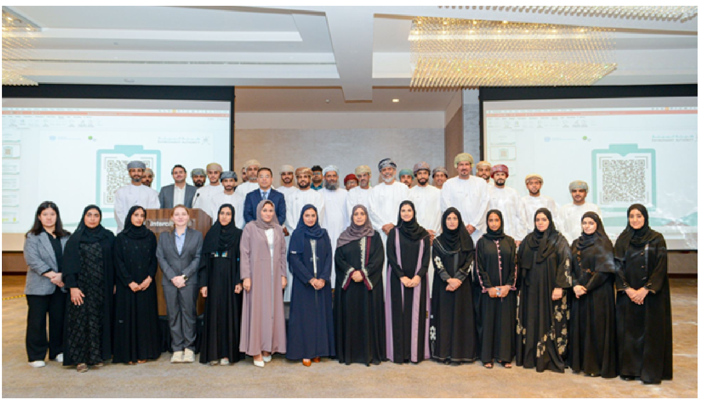
Oman, located on the southeastern coast of the Arabian Peninsula, is highly vulnerable to climate change due to its arid climate, limited renewable freshwater resources, long coastline, and reliance on climate-sensitive sectors such as agriculture, fisheries, and tourism. Rising temperatures, prolonged drought conditions, sea-level rise, and high exposure to tropical cyclones and associated flooding pose significant risks to ecosystems, infrastructure, and socio-economic stability. The Intergovernmental Panel on Climate Change (IPCC) identifies arid and semi-arid regions, including West Asia/MENA, as climate risk hotspots facing severe risks from warming, water scarcity, and extreme events.13
Oman’s arid conditions and low rainfall increase susceptibility to droughts and water shortages, with impacts compounded by high evapotranspiration rates and growing water demand. Pressure on groundwater resources, especially in coastal areas, can intensify saline intrusion and water quality degradation, increasing vulnerability of agricultural systems and domestic supply systems.14
Oman’s long coastline (approximately 3,165 km) increases exposure to sea-level rise, coastal erosion, and storm surges, with direct implications for coastal communities, critical infrastructure, fisheries, and tourism assets.15 High-impact cyclones, including Gonu (2007), Mekunu (2018), Shaheen (2021), and Tej (2023), are testament to Oman’s exposure to severe coastal storms and cascading effects on transport, housing, public services, and local livelihoods. The IPCC AR6 highlights that coastal flooding and cyclone-related hazards represent key risks to low-lying coastal settlements and ecosystems in West Asia.14
Observed records indicate a clear warming trend in Oman. Between 1980 and 2013, mean temperature increased by approximately 0.4°C per decade.16 The overall temperature trajectory remains upward, increasing heat stress risks, particularly in coastal urban areas where humidity can further elevate thermal discomfort.17
Figure 2 shows the long-term increase in annual average mean surface air temperature over 1950–2020, with consistently positive trend lines across multiple reference periods. While short-term variability affects decadal trend estimates, the overall trajectory remains upward. Figure 3 provides a closer view of the 2000–2020 period, illustrating year-to-year variability around an overall upward linear trend, which is consistent with continued warming and increasing heat-stress risk, particularly in coastal urban areas.
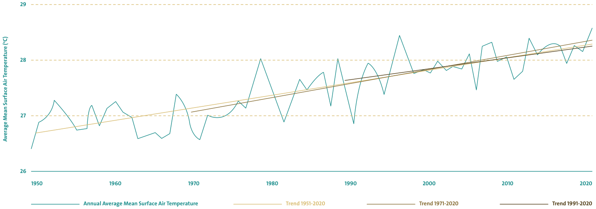
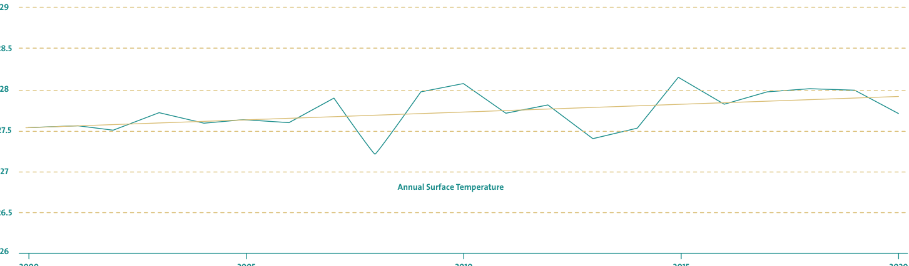
Oman’s average mean temperature is projected to increase over the coming decades. Figures 4 & 5 show the projected warming pattern across Oman under SSP5-8.5 and the projected monthly anomalies across SSP scenarios, with higher-emissions pathways showing greater warming. Under SSP5-8.5, national assessments indicate late-century warming of roughly 2–3°C relative to the 1995–2014 reference period, increasing risks related to heat stress and water scarcity.17
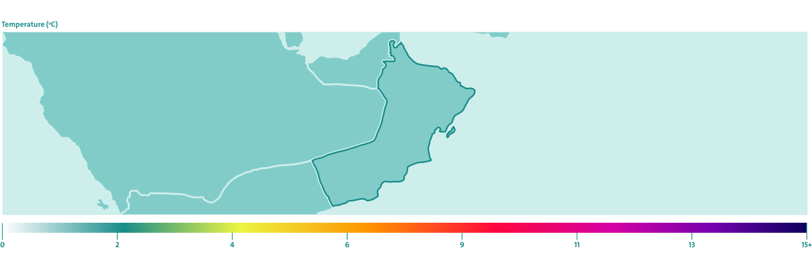
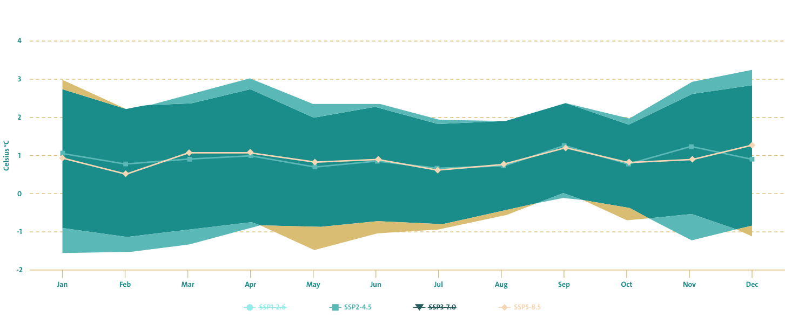
Rainfall in Oman is generally low and highly variable, both spatially and seasonally. Northern and interior areas are typically arid, while Dhofar receives higher seasonal precipitation influenced by the summer monsoon (Khareef). Recent assessments report very low annual average precipitation values in some years, including an annual average precipitation of 76.44 mm in 2022, reinforcing the sensitivity of water-dependent sectors to rainfall variability.17 Precipitation projections for Oman show variability across models and scenarios, with assessments indicating potential decreases in rainfall in some periods, alongside shifts in rainfall intensity and distribution.17 These dynamics can increase both drought risk and flash-flood risk, particularly in wadis and urban areas with constrained drainage capacity.
Some scenarios indicate a decline in average rainfall. Figures 6 & 7 show projected precipitation anomalies for 2020–2039 under different SSP pathways, highlighting uncertainty across models and months. National assessments indicate that in the near term, average annual precipitation could be approximately 50 mm lower than the 2000–2020 baseline, increasing water stress and risks for groundwater-dependent sectors and arid ecosystems.17
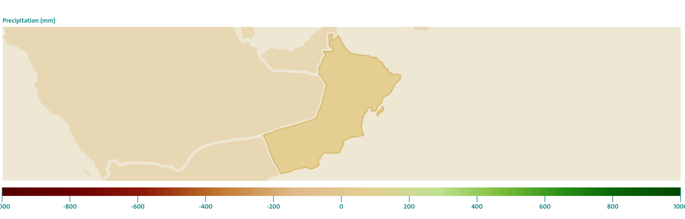
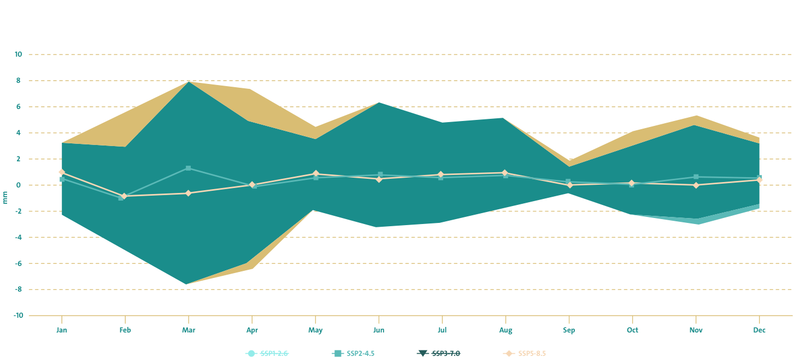
Heat extremes are already evident in Oman. In June 2018, Quriyat recorded a 24-hour minimum temperature of 42.6°C, indicating intensifying heat stress conditions.18 Increasing heat extremes present growing risks to public health, outdoor labor productivity, agriculture and livestock, and energy systems due to rising cooling demand and peak grid loads.15 Projections under higher-emissions pathways indicate further intensification of heat extremes, including increases in the frequency, duration, and severity of very hot days and warm nights.17
The severity of heatwaves in Oman is projected to increase in the future under all emission scenarios as per the IPCC AR6. Further, heatwaves are likely to become more frequent and intense, and heatwave days are projected to increase by 20-40% by 2050 under a high emissions scenario (Figures 8 & 9).
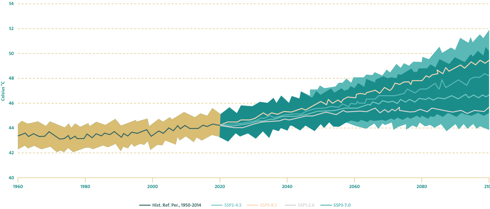
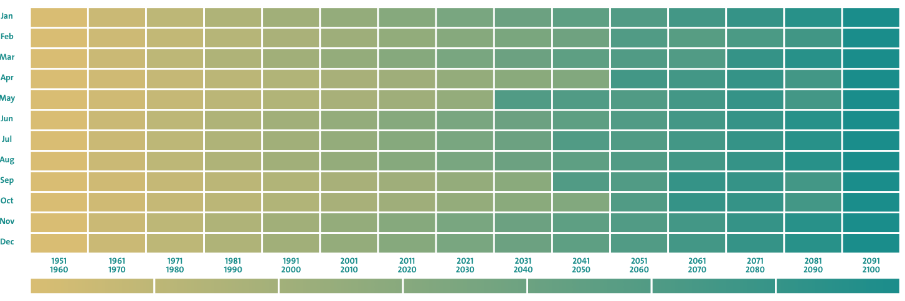
Heatwaves and rising temperatures are already affecting Oman’s human health, agriculture, and infrastructure through increased heat stress, higher cooling demand and grid loads, and potential impacts on crops and livestock. Combined with rainfall variability and water scarcity in a groundwater-dependent, arid setting, these trends heighten risks to socio-economic stability and essential services.
Flash floods remain a material risk in wadis and urban areas, and Cyclone Shaheen (2021) highlighted vulnerabilities in drainage networks and water-related infrastructure.17 In response, MoAFWR is advancing flood risk mapping, hydrological modelling, and the prioritization of high-risk catchments for monitoring and the implementation of structural and non-structural interventions.21 Oman is strengthening resilience through its NDC process and net-zero 2050 pathway, alongside enhanced disaster risk reduction measures. A key element is the National Multi-Hazard Early Warning Centre under the Civil Aviation Authority (CAA), which monitors weather and marine conditions, issues forecasts and alerts, and supports preparedness and response to severe events.19
Oman faces structural water scarcity driven by very low rainfall, high evapotranspiration, and rising demand, with groundwater and desalinated water forming a major share of national supply. Climate-driven variability is expected to amplify both drought stress and short-duration extreme rainfall events, increasing the combined risk of water shortages and flood damage.15
Oman’s water consumption exceeds renewable freshwater availability, with per-capita water resources well below the internationally recognized water-scarcity threshold of 1,000 m³ per year, increasing reliance on groundwater abstraction, desalination, and other non-conventional resources.17 In parallel, coastal aquifers remain vulnerable to saline intrusion and salinization, which can reduce water quality and constrain agricultural productivity and the reliability of domestic water supply.
To manage these risks, Oman maintains a nationwide monitoring and water infrastructure portfolio. Official submissions from MoAFWR for the NDC/NAP process indicate active monitoring through 633 rainfall stations, 2,073 piezometers, and 562 Aflaj systems, supported by a national dam portfolio of 67 dams, alongside 14 cloud-seeding stations contributing to water security efforts.20 MoAFWR also reports that 4,100 wadis have been identified nationally, with 112 prioritized for baseflow monitoring and targeted intervention to strengthen catchment resilience.21
Traditional Aflaj systems remain an important rural irrigation backbone in Oman and are recognized as part of the country’s long-established water governance model. However, as many Aflaj rely on open conveyance and fixed-flow distribution, water losses can be significant and system performance may decline under conditions of groundwater depletion and climate variability. These systems are therefore best framed as critical assets that are increasingly stressed and needs rehabilitation and efficiency upgrades.21
Declining and variable recharge, combined with over-extraction, increases the risks of groundwater depletion and salinization, particularly in coastal plains. National resilience assessments emphasize that exposure to sea-level rise and saline intrusion varies significantly across aquifers, implying the need for area-specific measures such as abstraction controls, recharge protection, salinity monitoring, and demand management.17
Desalination is critical for urban and industrial supply; however, climate change introduces operational risks, including warmer seawater temperatures and episodic marine events, such as harmful algal blooms, that can disrupt intake systems and reduce efficiency. Regional technical guidance highlights the need for strengthened monitoring, improved intake management, contingency planning, and climate-proofing of coastal water infrastructure.
Climate change is increasing pressures on Oman’s fisheries sector through ocean warming, marine heat extremes, and more disruptive coastal hazards, with implications for marine biodiversity, coastal livelihoods, and food security. These stressors can alter species distribution and seasonal availability, degrade sensitive habitats such as coral reefs and nursery areas, and increase post-harvest losses when extreme events disrupt landing and cold-chain Infrastructure.15
Warming seas reduce dissolved oxygen solubility and increase heat stress on marine organisms, while ongoing ocean acidification affects calcifying species and reef-building processes, together influencing reproduction, growth, and habitat quality for commercially important fish and invertebrates.14 The Arabian Sea also contains a major oxygen minimum zone; evidence indicates that its intensification and vertical expansion can compress habitable depth ranges for pelagic species and heighten ecosystem stress, particularly during extreme conditions.22
Cyclones and associated coastal flooding can damage boats, landing sites, and processing facilities and reduce the number of safe fishing days. This creates acute vulnerability for small-scale fishers, particularly where risk-transfer mechanisms (such as insurance and access to affordable recovery finance) are limited, making preparedness and resilient coastal infrastructure a central adaptation needs.15
Despite longer-term structural pressures, fisheries remain socio-economically significant for coastal communities. According to the NCSI, traditional fisheries landed 23.6 thousand tonnes in June 2025, with a value of OMR 25.2 million; cumulative landings for January–June 2025 reached 339,886 tonnes representing an increase of 4.4% compared to the same period in 2024.23
Strengthening systematic ecosystem and fisheries monitoring (including habitat condition, offshore oceanographic dynamics, and climate-informed stock assessments), expanding resilient cold-chain/landing infrastructure, and scaling climate-resilient aquaculture options are commonly identified priorities; however, broader deployment remains constrained by cost, technical capacity, and data coverage gaps (see section 4.3).21
Oman’s agricultural sector remains important for rural livelihoods and domestic food supply, but it is increasingly constrained by climate stressors, particularly rising temperatures, rainfall variability, groundwater depletion, and salinization in some coastal farming zones.15
Recent official statistics indicate that total agricultural production reached approximately 3.68 million tonnes in 2023, compared to approximately 3.49 million tonnes in 2022 (an increase of about 5.4%). Over the same period, cultivated area expanded to around 118–119 thousand hectares in 2023 (about 293,070 acres), up from ~275,909 acres in 2022 (an increase of about 6.2%).24 These trends show continued growth in agricultural activity, but also imply greater exposure to climate-driven water constraints as production expands.
Heat and evapotranspiration are key risk multipliers. Higher temperatures increase crop water requirements, shorten growing windows for some crops, and raise heat-stress risks for farm labor and livestock, especially during hot-season peaks. Water stress and salinity are also central: agriculture depends heavily on groundwater-based irrigation systems, including wells and traditional conveyance networks (such as Aflaj). Where conveyance losses and maintenance gaps exist, these systems can become less reliable under drought conditions and increasing competition for water resources.21
Acute hazards can compound these chronic pressures. Cyclones, storm surges, and intense rainfall can damage farms, irrigation assets, and rural roads, while also causing soil erosion and episodic salinity impacts in low-lying and coastal areas. Managing these risks requires both climate-resilient water allocation and farm-level adaptation measures (efficient irrigation, soil salinity management, and climate-smart agronomy).
|
Climatic Driver |
Main Risk Pathway |
Implications for Agriculture |
|
Rising temperature / heat extremes |
Higher evapotranspiration; heat stress |
Higher irrigation demand; yield/quality losses for heat-sensitive crops; stress on livestock and farm labor |
|
Rainfall variability / drought |
Reduced recharge; tighter water availability |
Greater reliance on groundwater; higher competition for limited water; increased production risk |
|
Salinity intrusion / higher irrigation salinity (in some zones) |
Soil and water quality degradation |
Reduced yields; higher soil management costs; risk of land productivity decline³ |
|
Cyclones / floods / storm surge |
Asset damage; erosion; episodic salinity impacts |
Damage to plantations and irrigation systems; disruption to harvesting and rural logistics |
Oman’s urban areas, tourism facilities, and critical infrastructure are increasingly exposed to climate hazards, particularly in high-density coastal zones where population and economic activity are concentrated. These risks are reflected in Oman’s national climate reporting and adaptation planning, which emphasize the need for climate-proof urban planning and resilient infrastructure investment.14, 24, 25
Oman’s extended coastline increases exposure to sea-level rise, coastal erosion, and saltwater intrusion into coastal aquifers. Oman’s national adaptation planning recognizes this exposure through the development and application of a Coastal Vulnerability Index (CVI) to identify high-risk coastal segments and inform risk-based planning and protection priorities.26
Exposure is amplified by settlement and built-up patterns along the coast. National reporting indicates a high concentration of population and development in coastal governorates, particularly Muscat and Al-Batinah, and a significant share of built-up areas located in close proximity to the shoreline, increasing the sensitivity of housing, services, and infrastructure to inundation and erosion.26
Sea-level rise represents a long-term risk multiplier for ports, coastal roads, utilities, and urban assets. The IPCC AR6 provides updated global sea-level rise projections across emissions pathways and highlights the planning relevance of higher-end outcomes for high-consequence coastal infrastructure due to ice-sheet uncertainty.25
National reporting and adaptation planning document substantial impacts from historic cyclone events and highlight the need for strengthened coastal defenses, flood-risk management, resilient drainage systems, and improved preparedness mechanisms.27
|
Climatic Hazards |
Impact on Urban Areas / Infrastructure |
|
Extreme Heat |
Increased heat stress and public-health risks; higher cooling demand and peak electricity load; operational stress on municipal services and outdoor work.15 |
|
Sea-Level Rise |
Coastal erosion; saltwater intrusion into groundwater; increased inundation risk for low-lying coastal assets; reduced stormwater drainage effectiveness during high tides.25, 26 |
|
Flooding (Flash floods / Wadis) |
Damage to roads, utilities, and buildings; disruption of transport and services; amplified impacts where development intersects flood-prone catchments and wadi systems.26, 27 |
|
Cyclones and Storm Surges |
Damage to coastal infrastructure (roads, ports, utilities, housing) and compound flooding from storm surge and intense rainfall; documented high impacts from major events affecting Oman.26, 28 |
|
Infrastructure Vulnerability (system stress) |
Increased exposure due to concentration of assets near the coast and rising demand for energy and water under higher temperatures; need for climate-proofing of urban planning and infrastructure standards.15, 26, 27 |
Tourism is a priority sector under Oman Vision 2040, positioned to support economic diversification and job creation beyond hydrocarbons.2 National statistics indicate a growing economic footprint, with Oman’s Tourism Satellite Account reporting direct tourism GDP of approximately OMR 1.06 billion in 2024, equivalent to a direct contribution of about 2.7% to GDP.28
Climate change introduces material risks to tourism assets, particularly in coastal and cyclone-exposed areas, through tropical cyclones, flash floods, coastal erosion/inundation, sea-level rise, and extreme heat. These hazards can damage infrastructure, disrupt access and services, and degrade nature-based tourism assets.29
Strengthening resilience begins with preparedness and operational readiness. Oman’s national meteorological and early warning functions, including the National Multi-Hazard Early Warning System (NMHEWS), provide a practical basis for tourism-specific procedures, such as site-level emergency plans, visitor alerting systems, operator continuity planning, and coordination with local authorities.30 Mainstreaming climate-risk screening into siting, design standards, and zoning reduces long-term exposure and avoids locking-in new climate risks, consistent with national adaptation priorities.30
For coastal and marine tourism, ecosystem-based measures are particularly relevant. Mangrove rehabilitation and coastal ecosystem protection can strengthen natural buffering and support biodiversity values that underpin ecotourism.31 Protecting coral reef systems and monitoring reef health also matters for sustaining marine tourism value under warming and extreme events.32
Oman’s public health sector, led by the Ministry of Health (MoH), is increasingly exposed to climate-related hazards. Extreme events, including flooding and intense rainfall, heatwaves, and associated service disruptions, can increase injuries and heat-related illnesses, aggravate respiratory and cardiovascular conditions, and elevate risks linked to vector-borne disease transmission. Dust and blowing-dust events are also a growing concern in the region; national meteorological awareness materials note direct health impacts, including increased respiratory illnesses.33, 34
Under high-emissions pathways, these risks intensify. Oman’s First Biennial Transparency Report (BTR1) summarizes SSP5-8.5 projections indicating that by 2100, temperatures could approach or exceed human survivability thresholds under certain conditions, with daily maximum temperature anomalies of up to approximately 6.5°C and potential peak temperatures of around 52.06°C in Al Dhahirah, alongside a sharp increase in extremely hot days (Tmax > 45°C), including approximately 110.65 additional hot days annually in Al-Dhahirah, with comparable increases projected for Al-Dakhiliyah, Al-Sharqiyah, and Dhofar. These projections underline the need to prioritize protective measures for vulnerable groups, including children, the elderly, and individuals with pre-existing health conditions, through heat-health preparedness, risk communication, and strengthened health surveillance and response systems.15, 34
Between 2002 and 2021, Oman experienced a series of high-impact cyclones and other extreme events that resulted in economic losses totaling approximately USD 7.30 billion, with major contributions from Cyclone Gonu (2007) and Cyclone Mekunu (2018). These losses attest to Oman’s exposure of critical sectors, especially infrastructure, agriculture, and public health, to climate-intensified hazards, and reinforce the need to embed DRR, resilient infrastructure standards, and climate adaptation into national development planning.15
|
Impact Category |
Description |
Projected Impact by 2040 (USD) |
|
Total economic losses* |
Aggregate projected losses from climate-related extreme events if risks are not systematically reduced |
13.14 billion |
|
Infrastructure damage |
Accumulated damage to physical infrastructure from extreme events |
9.0 billion |
|
Agriculture sector losses |
Losses related to climate impacts on agricultural production and livelihoods |
0.54 billion |
|
Public health costs |
Increased health-related expenditures associated with climate impacts |
1.17 billion |
|
Energy grid costs |
Damage, disruption, and adaptation-related costs affecting the electricity grid |
0.15 billion |
|
Water scarcity losses |
Economic losses linked to increased water stress and scarcity |
0.36 billion |
|
Macroeconomic (GDP) losses* |
Cumulative GDP losses due to reduced productivity and compounding economic effects |
72.0 billion |
* Component categories shown are indicative and non-exhaustive; the total includes additional loss categories not itemized here. Macroeconomic (GDP) losses are a separate cumulative measure and are not additive with the categories above.
At the same time, these figures should be treated as conservative for decision-making, because disaster loss accounting often under-captures several material cost components that governments still pay for. Post-disaster assessment guidance distinguishes direct damages (destroyed assets) from indirect losses (reduced flows of income/production), and further recognizes recovery and reconstruction needs that include public support, social transfers, and service restoration, that may not be fully reflected in headline (economic loss) totals.35 In Oman’s case, this matters because:
Oman has already recorded large insured-loss compensation following major events, such as Cyclone Shaheen-related insurance compensation exceeding OMR 62 million, with thousands of claims, illustrating that disaster impacts propagate into financial channels, not only physical assets.38
Finally, if Oman’s objective is to robustly track and account for the full public cost of climate impacts, including climate-proofing, disaster response, recovery transfers, and resilience investments, introducing a Climate Budget Tagging (CBT) approach within the national budget system is a practical and internationally recognized step. CBT will be implemented to classify and track climate-relevant expenditures across ministries and budget lines, improving transparency, helping quantify climate-related fiscal exposure, and strengthening the evidence base for climate finance mobilization and prioritization.39
Oman is scaling up adaptation in line with Article 7 of the Paris Agreement and the Global Goal on Adaptation, reflecting its exposure to climate stresses in an arid setting. Oman is advancing its NAP through a Green Climate Fund (GCF) Readiness program. The 36-month NAP process strengthens adaptation governance, builds the evidence base for prioritizing sector actions, and supports monitoring and finance planning across priority sectors (water, agriculture, fisheries and marine systems, infrastructure including urban areas and tourism, and public health). The resulting NAP outputs are intended to improve the clarity, consistency, and trackability of adaptation priorities and support needs in future NDC updates.40
Water is one of Oman’s most climate-sensitive sectors and therefore sits at the center of national adaptation delivery. The measures below are structured for future tracking (objective, measures, examples or indicative investments) and reflect inputs consolidated through the NDC/NAP consultation process. Table 5 summarizes what Oman is implementing in the water sector (adaptation tracks and measures), while linking each track to observable investment lines to strengthen accountability.
|
Adaptation Track |
Objective |
Key Measures |
Examples / indicative Investments |
|
Strategic planning & governance |
Strengthen climate-resilient water governance and prioritization |
Implement NAP/National Adaptation Strategy and align water planning with climate risk; improve inter-agency coordination; integrate risk screening into project selection |
Water-sector project portfolio under national planning frameworks; climate-risk screening applied to flood protection and recharge priorities |
|
Flood risk management & protection dams |
Reduce flood impacts on people, assets, and economic activity in high-exposure areas |
Construct/upgrade flood protection dam systems; strengthen drainage/channel protection; integrate flood maps into zoning and infrastructure design |
Flood protection dams portfolio: Total cost OMR 162,547,889; Committed OMR 159,484,374 (9 line-items). Including major protection works in Muscat, Seeb, Al-Amirat, and Salalah |
|
Groundwater recharge & storage resilience |
Increase water security by enhancing recharge and buffering seasonal variability |
Expand recharge dams; improve recharge operations; develop/maintain storage dams in mountainous areas where relevant |
Recharge dams portfolio: Total cost OMR 16,215,254; Committed OMR 16,051,923 (10 line-items). Storage dams: Adjusted cost OMR 4,391,357; Committed OMR 3,624,958 |
|
Asset maintenance & post-event rehabilitation |
Sustain performance of water infrastructure and restore functionality after extreme events |
Routine O&M for dams/water structures; repair/rehabilitation after cyclones and floods |
Maintenance and rehabilitation: Total cost OMR 3,706,237; Committed OMR 2,610,293 |
|
Ecosystem & catchment management |
Reduce non-climatic pressures that compound water vulnerability |
Remove invasive species; support community dams where applicable; protect catchments to reduce erosion/sedimentation and improve recharge outcomes |
Ecosystem and catchment actions: Total cost OMR 1,392,000; Committed OMR 278,719 |
|
Monitoring, modelling & decision support |
Improve evidence-based allocation, recharge planning, and early action |
Expand hydrological monitoring and reporting; update flood risk maps and management plans; use modelling tools for groundwater and flood studies |
Implemented through planning and preparation functions linked to the above , including flood mapping, feasibility and design studies, monitoring and reporting) |
To ensure effective implementation, the MoAFWR conducted detailed consultancy studies across multiple water catchments to identify best engineering solutions for reducing flood risks, resulting in a proposal for the construction of 58 dams and the rehabilitation of wadi channels, prioritized across three priority plans, as shown in Figure 10.
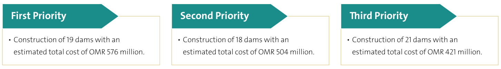
To strengthen Oman’s resilience to flood risks, the MoAFWR has commissioned a series of consultancy studies aimed at identifying, designing, and implementing effective flood protection systems across multiple governorates (Table 6). The following progress has been made on consultancy studies for protection systems across different governorates:
|
Project/ Location |
Wilayah |
Scope of Work |
Status |
Expected Completion |
|
Flood Protection System (Lima) |
Khasab, Musandam |
Feasibility studies and design of the flood protection system |
Completed |
- |
|
Flood Protection System (North and South Al-Batinah) |
North and South Al-Batinah |
Feasibility studies, detailed design of dams and channels, flood maps for wilayats, and wadi channel surveys |
Ongoing |
Q2 2026 |
|
Flood Protection System (Muttrah) |
Muscat |
Feasibility, detailed designs, and supervision of the flood protection system |
Ongoing |
Q3 2026 |
|
Flood Risk Mapping & Management Plans |
Muscat, Dhofar, and Musandam |
Updating and preparation of flood risk maps and management /emergency response plans |
Ongoing |
Q2 2026 |
|
Flood Risk Mapping & Management Plans |
North & South Al-Sharqiyah, Al-Wusta, Al-Dakhiliyah, Al-Dhahirah, and Al-Buraimi |
Updating and preparation of flood risk maps and management /emergency response plans |
Ongoing |
Q2 2026 |
|
Drainage Channels Beneath Al-Khoud Recharge Dam |
Muscat (Al-Seeb) |
Design and supervision consultancy |
Under bid evaluation |
|
|
Drainage Channels Beneath Al-Jafnin Dam (JIF07) |
Muscat (Al-Seeb) |
Design review, modification, and supervision of drainage channels |
Under bid evaluation |
For implementation oversight, the following table provides a portfolio-level snapshot of the 10th Five-Year Plan water-related projects by category (cost, commitment, and coverage). This allows quick tracking of where public investment is concentrated such as flood protection versus groundwater recharge).
|
Wilayah |
Project Title |
Total Commitm -ent (OMR) |
% of Impleme -ntation |
|
Nation wide |
National Campaign for the Removal of Prosopis Juliflora (Mesquite Tree) |
169,354 |
14.8 |
|
Sur |
Implementation of Al-Falij Dam in Wilayat Sur |
521,986 |
100 |
|
Seeb |
(10KA) Protection Dam above Al-Khoudh Village, Seeb |
1,004,299 |
100 |
|
Mudhaibi |
Groundwater Recharge Dams in Wilayats Mudhaibi & Ibra |
107,203 |
100 |
|
Bahla |
Groundwater Recharge Dam on Wadi Kidb, Bahla |
180,154 |
100 |
|
Dhank |
Groundwater Recharge Dam on Wadi Surur, Dhank |
1,681,033 |
100 |
|
Yanqul |
Groundwater Recharge Dam on Wadi Al-Sudairin, Yanqul |
1,116,650 |
100 |
|
Mudhaibi |
Groundwater Recharge Dam on Wadi Al-Ayoun, Mudhaibi |
47,030 |
47.9 |
|
Jalan Bani Bu Ali |
Groundwater Recharge Dam on Wadi Sal, Jalan Bani Bu Ali |
3,049,813 |
100 |
|
Al-Kamil & Al-Wafi |
Groundwater Recharge Dam on Wadi Markha, Al-Kamil & Al-Wafi |
248,000 |
100 |
|
Mudhaibi |
Groundwater Recharge Dams in Wilayats Mudhaibi & Ibra |
7,758,657 |
99.8 |
|
Ibri |
Groundwater Recharge Dams in Wilayat Ibri |
298,236 |
100 |
|
General Nature |
Maintenance of Dams and Water Structures |
2,405,967 |
69.8 |
|
General Nature |
Construction of Storage Dams in Mountainous Areas |
3,624,958 |
88.1 |
|
Salalah |
Repair of Dams Affected by Cyclone Mekunu in Dhofar |
204,326 |
79.5 |
|
Seeb |
Protection Dam in Al-Jafneen Area |
41,383,892 |
97.6 |
|
Al-Amirat |
Protection Dam in Al-Jafiniya / Al-Amirat |
35,055,723 |
100 |
|
Salalah |
Wadi Annar Protection Dam & Side Protection near Salalah Port |
20,914,541 |
91.2 |
|
Salalah |
Wadi Adounab Protection Dam, Salalah |
22,195,973 |
100 |
|
Al-Amirat |
Construction of Wadi Adai Dam |
38,660,023 |
100 |
|
Liwa |
Wadi Al-Zuhaimi Dam, Liwa |
9,246,099 |
100 |
|
Rustaq |
Groundwater Recharge Dam on Wadi Al-Ma’nutiyah |
1,565,147 |
94.1 |
|
General Nature |
Support for Local (Community) Dams (51 dams) |
109,365 |
43.7 |
|
General Nature |
Construction of Storage Dams in Mountain Areas |
0 |
0 |
|
Total |
191,818,352 |
- |
Oman is working to institutionalize integrated water budgeting and forecasting systems that combine surface water and groundwater resources within a unified framework. These models are key components of the National Water Plan, supporting demand forecasting, emergency response planning, and sustainable water allocation across sectors. Through these integrated and forward-looking measures, Oman is ensuring that its water sector remains resilient, efficient, and aligned with SDG 6 and SDG 13, while offering transferable lessons for other arid and water-stressed countries facing similar climate pressures. Finally, Oman is strengthening water-sector resilience through integrated planning and investment aligned with national adaptation frameworks and the NDC process. Reported priority directions include: (i) expanding and upgrading flood protection and recharge dams and rehabilitating priority wadis; (ii) enhancing hydrological monitoring and digitized risk mapping to guide investment decisions; (iii) scaling wastewater reuse and demand management; and (iv) strengthening desalination operational safeguards and intake resilience.
The MoAFWR is advancing an adaptation package that targets Oman’s main agricultural climate risks (heat stress, rainfall variability, salinity, and land degradation) by prioritizing water-use efficiency, climate-resilient cropping systems, and strengthened land and water governance. Current directions also emphasize expanding safe water reuse, including treated wastewater, improving irrigation systems performance, and protecting agricultural productivity through flood-protection infrastructure and targeted programs under national strategies such as Sustainable Agriculture and Rural Development Strategy (SARDS) 2040 and food security initiatives.43
|
Adaptation Theme |
Key Measures (what MoAFWR is doing) |
Examples / Notes |
|
Climate-smart water use |
Expand modern irrigation (efficiency), improve water allocation, and integrate drought/heat considerations into farm planning |
National planning aligns with the resilience of agriculture and rural livelihoods to climate change objective under SARDS 2040.15, 43 |
|
Treated wastewater reuse & salinity management |
Scale treated wastewater reuse where feasible; address salinity intrusion risks through integrated water-agriculture measures |
BTR1 highlights expanded wastewater treatment and reuse, including applications to address salinity; reclaimed-water supply initiatives to farms are being implemented.15, 21 |
|
Climate-resilient crops & cropping shifts |
Promote climate-resilient crop choices and reduce exposure to water-intensive cropping where needed |
BTR1 references efforts such as replacing water-intensive crops (e.g., Rhodes grass) with alternatives (e.g., wheat), plus climate-resilient crops.15, 44 |
|
Soil & land restoration |
Soil rehabilitation, salinity mapping/management, land productivity restoration in vulnerable zones |
Supports SARDS 2040 outcomes on sustainable natural resource management and resilience.44 |
|
Precision agriculture & technology |
Deploy farm tech that improves efficiency (monitoring, targeted inputs, better scheduling) |
National initiatives increasingly emphasize precision agriculture and efficiency-driven modernization.21 |
|
Flagship food -security programs |
Large-scale programs that support farmers, SMEs, and domestic production capacity |
The sustainable Finance Framework outlines the objectives and delivery model of the Million Date Palm Plantation Project.9 |
|
Disaster risk reduction for agriculture |
Invest in protective infrastructure and preparedness to reduce flood/cyclone impacts on farms and rural assets |
Islamic Development Bank (IsDB) procurement notices reference major flood-protection dams and related components under MoAFWR.45 |
|
Ecosystem-based resilience |
Rangeland rehabilitation and nature-based resilience actions where relevant to rural livelihoods |
Rangeland rehabilitation programs are being implemented using a community-based approach.46 |
In response to escalating climate risks affecting fisheries, marine habitats, and coastal livelihoods, the MoAFWR is implementing a coordinated set of packages of adaptation measures across four complementary tracks: ecosystem-based management, technology and monitoring, institutional strengthening, and socioeconomic resilience. These actions are intended to protect fish stocks and critical habitats, reduce post-harvest losses, and improve preparedness and recovery capacity across coastal value chains.21
|
Adaptation Track |
Objective |
Key Measures |
Examples / Indicative Investments |
|
Ecosystem-based & nature-based measures |
Protect and restore critical habitats; reduce non-climate pressures to strengthen ecosystem resilience |
Expand and manage marine protected areas (MPAs); apply seasonal/area-based restrictions (including no-take zones where applicable); conserve seagrass, mangroves, and coral reefs; apply Marine Spatial Planning (MSP); support stock through captive breeding, ranching, and restocking |
Habitat protection and restoration actions; application of MSP to reduce cumulative impacts on spawning and nursery areas and climate refugia.21 |
|
Technology, monitoring & early action |
Improve surveillance, data-driven management, and resilience of fish handling/quality |
Artificial reefs; marine biodiversity monitoring; vessel monitoring systems (VMS); pilot deployment of Refrigerated Sea Water (RSW); data tools (e.g., tagging, ocean observation platforms) |
Artificial reef construction (OMR 2.0 million); marine biodiversity monitoring (OMR 80,000); VMS (OMR 150,000); RSW pilots to reduce post-harvest losses.21 |
|
Institutional & policy measures |
Embed climate risk in fisheries governance and cross-sector planning |
Integrate climate risk into fisheries management plans and MSP; update licensing and compliance approaches; strengthen coordination with coastal development, conservation, tourism and infrastructure authorities; scale climate-resilient aquaculture where appropriate |
Governance strengthening and coordination mechanisms linked to national adaptation planning and climate reporting.15 |
|
Socioeconomic resilience & livelihoods |
Reduce household vulnerability and strengthen value-chain resilience |
Upgrade onshore value chains (processing, cold storage, and logistics); skills development (including youth and women); livelihood diversification (such as low-impact aquaculture and marine ecotourism); explore risk-financing tools, including cyclone-related coverage for fisheries assets) |
Investments in post-harvest and market resilience; exploration of risk-financing instruments to address cyclone exposure in fisheries assets.21 |
Oman’s infrastructure and public services are increasingly exposed to extreme heat, flash floods, sea-level rise, and water stress, with exposure amplified in the Muscat– Al-Batinah coastal development corridor. National reporting indicates that 57.5% of the population is concentrated in Muscat and Al-Batinah (Apr 2019) and that 47.7% of built-up areas in the seven coastal governorates are within 200 m of the shoreline, which increases the sensitivity of roads, utilities, buildings, and public services to coastal flooding and erosion, as well as compound storm impacts.
Oman’s adaptation response focuses on mainstreaming climate risk into spatial planning and development standards, including the Oman National Spatial Strategy (ONSS), upgrading urban drainage and flood-risk management, strengthening the resilience of utilities and critical services, and reinforcing DRR and institutional coordination, as reflected in national strategies and UNFCCC reporting.15, 26, 47
|
Category |
Key Adaptation Measures |
Examples / Instruments (non-exhaustive) |
|
A. Climate-resilient infrastructure & urban form |
Climate-risk mainstreaming into land-use planning; hazard-sensitive zoning and setbacks; flood mapping and risk assessments; upgrading stormwater systems; nature-based and hybrid urban cooling and runoff solutions |
ONSS planning standards and spatial controls; risk-based planning tools; Sustainable Urban Drainage Systems (SUDS), including permeable surfaces and green roofs, referenced in national reporting. |
|
B. Public services (water, electricity, sanitation, waste, ICT) |
Climate-risk screening for utility assets; redundancy and protection for critical networks; resilient water supply and distribution; sanitation and wastewater resilience; service continuity planning under extreme events |
Utility resilience improvements referenced in national reporting, including service continuity under heat and flood risk; wastewater and sanitation upgrading as part of resilience efforts. |
|
C. Disaster risk reduction (DRR) & emergency preparedness |
Strengthened flood-risk management (wadi systems and flood control assets); early warning and preparedness; climate-resilient design parameters for public assets; emergency response coordination |
National DRR and early warning arrangements and cyclone and flood preparedness; documented severe impacts from cyclones used to justify DRR strengthening. |
|
D. Institutional measures, data platforms, capacity & finance |
Cross-government coordination; climate data and decision-support systems; capacity building for planners and engineers; mobilization of climate finance for resilience investments |
National adaptation strategy framework; BTR1 highlights ongoing strengthening of adaptation planning and implementation capacity. |
Adaptation in the tourism sector focuses on: (i) strengthening preparedness and emergency readiness using national early warning and response systems; (ii) embedding climate risk screening into land-use planning and design standards for tourism infrastructure; and (iii) applying ecosystem-based measures in coastal and marine tourism areas to reduce exposure to erosion, inundation, and storm impacts.26
|
Adaptation Measure |
Location / Scope |
Lead Institution(s) |
Expected Benefit |
|
Localized early warning and destination preparedness procedures |
Key destinations (Muscat, Sur, Salalah) |
CDAA, relevant authorities, and Ministry of Heritage & Tourism |
Faster response to cyclones, flash floods, and heat events; improved visitor safety and operator continuity |
|
Hazard-based land-use planning and zoning for tourism assets |
Coastal and flood-prone zones |
Ministry of Housing & Urban Planning and municipalities |
Avoids siting new assets in high-risk areas; reduces long-term exposure and future losses |
|
Shoreline stabilization and nature-based buffers |
Erosion-prone coastal segments |
EA and municipalities |
Reduces erosion and storm surge impacts; protects coastal tourism infrastructure and public beaches |
|
Mangrove and wetland restoration to support coastal resilience |
Coastal lagoons and estuaries (including Dhofar) |
EA and NGOs |
Natural buffering and biodiversity co-benefits that support eco-tourism value and resilience |
|
Coral reef and seagrass ecosystem protection (as tourism-relevant natural assets) |
Marine tourism zones (such as Musandam and Dhofar) |
MoAFWR and tourism-related authorities |
Protects marine biodiversity and sustains eco-tourism attractions under warming and extreme events |
|
Climate-risk observatory and risk analytics for tourism planning (proposed) |
National tourism sites |
EA and relevant national observatories |
Improved investment planning through geospatial risk screening, monitoring, and climate projections |
In response to the increasing climate-related risks, Oman is progressively mainstreaming climate resilience into health-sector strategy and planning, anchored in long-term health system development,48 the updated National Health Policy (2025), and national climate adaptation frameworks. Current priorities emphasize strengthening surveillance and notification systems for climate-sensitive diseases, risk communication (including heat safety), safer water and environmental health measures, resilient emergency preparedness, and community-level prevention platforms such as the Healthy Cities initiative.15, 26, 49, 55
|
Adaptation Area |
Key Measures |
Examples / Evidence (Current Initiatives) |
Indicative Targets / Notes |
|
A. Early warning, risk communication & community protection |
Integrate health preparedness into multi-hazard early warning systems; strengthen risk communication for heatwaves, dust storms, floods, and cyclones; targeted outreach to vulnerable groups. |
NMHEWS provides multi-hazard warning capability (cross-sector enabling system).49 MoH public heat-safety messaging, including seasonal health guidance).50 |
Scale and systematize health-trigger thresholds and Standard Operating Procedures (SOPs) for climate hazards across governorates (as part of broader emergency preparedness).15, 26 |
|
B. Climate-sensitive disease surveillance & rapid response |
Expand surveillance and notification for climate-sensitive diseases; improve case detection, reporting, and rapid response capacity in higher-risk areas; strengthen outbreak investigation and inter-sectoral coordination. |
MoH Communicable Disease Notification Policy & Procedures provide the national framework for reporting and response; 51 MoH dengue guidance and documented outbreak response experience in Oman.52, 53 |
Priorities include expanding coverage and strengthening routine integration of climate risk information into surveillance planning and response workflows.15 |
|
C. Integrated vector management (IVM) & environmental health |
Strengthen integrated vector management approaches; emphasize multi-sector coordination (health, municipalities, environment and others); community-based prevention and source reduction. |
Evidence base includes Oman’s documented dengue response experience, including vector control operations; the National Health Policy promotes readiness for climate changes and hazards, reinforcing prevention and control methods. |
Strengthen governance for sustained vector control, routine monitoring, and community engagement especially under warming conditions that expand vector suitability.15, 54 |
|
D. Water safety, WASH continuity & environmental determinants of health |
Strengthen safe water measures and continuity planning during floods and cyclones; improve monitoring and response protocols for water quality risks; reinforce sanitation and hygiene safeguards to limit outbreaks. |
MoH national SOP for water quality provide operational guidance supporting water safety.55 The National Health Policy identifies water safety and sanitation as core pillars and highlights preparedness for climate changes. |
Further work needed to connect climate risk scenarios (flooding and salinization) with public health emergency water safety planning across high-risk locations.15 |
|
E. Health facility resilience & emergency preparedness |
Strengthen resilience of health service delivery through preparedness planning; ensure continuity of essential services during extreme events; improve all-hazards emergency readiness and response capacity. |
The National Health Policy (2025) explicitly prioritizes an integrated national system for managing public health emergencies and emphasizes readiness for climate change. BTR1 highlights the need to strengthen health-related assessments, strategies, and implementation planning. |
Continue facility risk screening, preparedness planning, and integration with DRR and climate adaptation governance across sectors.15, 55 |
|
F. Community-based resilience & Healthy Cities platform |
Use the Healthy Cities platform as a multi-sector mechanism for community health, prevention, and resilient living conditions; strengthen local partnerships and participation that reduce vulnerability. |
Oman First Conference on Healthy Cities and program scaling discussions. Additional MoH announcements on WHO-linked Healthy City designations. |
Strengthen measurable local targets and institutionalize Healthy Cities as an enabling adaptation platform including heat resilience, non-communicable disease (NCD) co-benefits, and health awareness.56, 57 |
SQU supports Oman’s adaptation agenda by generating applied research and decision-support evidence across priority climate risks, and it is formally engaged as a partner in the national NAP process. SQU’s contributions during the NAP/NDC consultations highlighted key research needs in agriculture, water resources, flash flooding, and coastal infrastructure, and identified gaps in the application of Artificial Intelligence and Machine Learning (AI/ML) for climate risk prediction and early warning (including extreme events and climate-sensitive health risks).61
|
Adaptation track |
Objective |
Key measures |
Examples / Indicative Investments |
|
Climate risk & vulnerability research |
Strengthen the national evidence base for adaptation prioritization |
Applied studies on climate impacts across agriculture, water, flooding, and coastal systems; translate research into policy-relevant outputs |
Research outputs aligned to NAP deliverables and national priorities under the GCF Readiness program |
|
Technology, modelling & early warning innovation |
Improve predictive capacity and early action using advanced analytics |
Develop AI/ML tools and models for drought forecasting, flood risk forecasting, and resource stress prediction; integrate with decision-support systems |
AI-based drought prediction & resource optimization project (initial allocation OMR 35,000, 2025–2028) |
|
Applied adaptation solutions & pilots |
Test and validate adaptation options in real operating contexts |
Field-linked research on agriculture extension and outreach, coastal zone management, and climate impact modelling; develop practical tools for implementers |
Sector-specific pilots and applied research packages to support operational decisions-making in water and agriculture planning |
|
Research governance, tracking & policy linkage |
Ensure transparency, quality control, and policy uptake |
Track research outputs and performance through institutional systems; strengthen coordination between academia and national planning entities. |
Research output tracking through PURE (Research at SQU and research governance through the Deanship of Research) |
|
Item |
Scope / Purpose |
Budget / Resource Need |
Timeline |
Tracking / Governance |
|
AI-based drought prediction & resource optimization |
AI/ML-enabled drought prediction and decision support for water/agriculture planning |
OMR 35,000 (initial allocation) |
2025–2028 |
SQU research tracking systems (PURE) and Deanship of Research oversight |
|
Recurring adaptation research funding need |
Sustained cross-sector adaptation research and expansion of applied work |
Approximately OMR 1 million per year |
Ongoing |
Institutional research governance and performance monitoring |
|
National coordination framework (recommended) |
Link academic outputs to NAP priorities; enable cross-disciplinary innovation and stronger uptake |
Institutional coordination requirement (non-costed in submission) |
Ongoing |
Alignment mechanism between academia, government, and the private sector |
The Sultanate of Oman has recently completed a detailed update of its net zero strategy, led by the ONZC in coordination with relevant sector stakeholders. This update was informed by more granular sectoral emissions data and assessments of decarbonization potential through 2050, which remains Oman’s long-term objective. The revised strategy reflects increased analytical confidence, drawing on improved data quality and direct involvement of key sectors in shaping decarbonization pathways.
A key outcome of this update has been the refinement of the methodological approach used to calculate national mitigation commitments. As a result, the national milestone for 2035 has been confirmed and updated, ensuring stronger alignment with the overall trajectory toward net zero emissions by 2050. These updates aim to enhance accuracy, transparency, and sectoral ownership of the national pathway, and support clarity in reporting under the UNFCCC, consistent with the principles of Transparency, Accuracy, Completeness, Comparability, and Consistency (TACCC).
The outcomes of the updated strategy inform the mitigation component of Oman’s Third NDC. In addition, as a developing country, Oman aligns its climate commitments with the UNFCCC and the Paris Agreement principles of Common but Differentiated Responsibilities and Respective Capabilities (CBDR-RC), taking into account its national circumstances.
|
NDC Element |
Specification |
|
Base Year |
|
|
Target Year |
|
|
Target Type |
|
|
Target Values |
|
|
Conditionality |
|
|
Business-as-Usual (BAU) Assumptions |
|
|
Greenhouse Gases |
|
|
Covered |
(GWPs) from the Intergovernmental Panel on Climate Change Sixth Assessment Report (AR6).
|
|
Scope and Sectoral Coverage |
|
A. 2024 GHG Emissions Baseline (in MtCO2e)
|
IPCC Sectors (2024) |
Total Direct Emissions (MtCO2e) |
|
Energy |
79.6 |
|
Industrial Processes and Product Use (IPPU) |
10.5 |
|
Agriculture, Forestry and Other Land Use (AFOLU) |
1.8 |
|
Waste |
1.7 |
|
Total |
93.6 |
The Sultanate of Oman’s mitigation strategy prioritizes emission reduction measures based on cost-effectiveness, technical readiness, and implementation feasibility. Current efforts focus on near-term, attainable measures, including energy efficiency, renewable energy deployment, fuel switching, public transport electrification, flare gas recovery, and nature-based carbon sinks. Higher-impact options, such as CCUS, low-carbon fuels, and hydrogen, are expected to be pursued progressively as finance, infrastructure, and institutional capacity become available. Sector-relevant KPIs, including emissions abated, installed renewable energy capacity, and electrification rates, are tracked internally and will evolve with implementation progress and resource availability.
As part of the national decarbonization strategy, ONZC convened extensive workshops with stakeholders across all sectors to identify policy mechanisms needed to enable implementation of mitigation measures that contribute to the national mitigation objective. The resulting measures were grouped into four categories: demand-side measures, governance and regulatory instruments, incentives, and supply-side measures. Based on these consultations, a set of policy options was framed for consideration by the competent policymaker in each sector.
Table 17 summarizes the strategic decarbonization levers identified under each of the main IPCC sectors, along with the corresponding national entities responsible for implementation and oversight.
|
IPCC Sector |
Strategic Decarbonization Levers |
|
Energy |
Deployment of renewables while maintaining grid stability and leveraging GCC interconnection; increasing renewable share in captive power for industry and oil and gas; key levers include energy efficiency, EV shift and public transport, renewables (Solar, Wind, Battery Energy Storage System (BESS)), fuel switch, flare recovery, and carbon sinks. |
|
IPPU |
Gradual adoption of CCUS in refining and heavy industry (cement, steel, chemicals) depending on funding availability, process optimization, energy efficiency, and material/fuel substitution; supported by levers such as CCUS hubs, hydrogen for transport, and biofuels. |
|
AFOLU |
Precision agriculture, balanced date palm cultivation, and improved land-use practices for carbon balance; key levers include carbon sinks and biochar. |
|
Waste |
Expansion of waste-to-energy solutions, methane recovery from landfills, and improved municipal solid waste systems; levers include Waste-to-Energy (WtE), methane recovery, and enhanced waste management. |
Based on the 2024 national GHG inventory, the highest-emitting categories fall under the IPCC Energy sector, amounting to over 85% of total national emissions. Additional significant contributions are observed under the IPPU sector, particularly from cement production, aluminum production, iron and steel production, and ammonia and methanol manufacturing. These categories are prioritized for mitigation based on their relative contribution to total emissions and their alignment with national sectoral pathways. As national inventory systems continue to advance, higher-tier analytical approaches may be applied to better quantify category-specific uncertainties and improve trend detection over time.
As a developing country, the Sultanate’s of Oman GHG inventory relies primarily on default IPCC emission factors and regional proxies where country-specific factors are not yet available. This introduces uncertainty, particularly in the energy and industrial sectors. Oman applies consistent methodological approaches and transparent documentation practices to manage uncertainty, while future improvements will focus on strengthening national data systems and developing country-specific emission factors through targeted capacity-building and technical cooperation.
The national GHG inventory for 2024 was developed using the 2006 IPCC Guidelines for National GHG Inventories and updated Global Warming Potentials (GWPs) from AR6. A Tier 1 approach was applied for most categories, with higher-tier estimates used where activity data and emission factors were available, particularly in the Oil & Gas and Power sectors. The inventory integrates both top-down and bottom-up data sources, including fuel-consumption statistics, process-level data from industrial facilities, and sectoral submissions. Default IPCC factors were applied where national factors remain under development.
Economic diversification is a core pillar of Oman Vision 2040 and is increasingly framed as a practical enabler of Oman’s long-term net-zero pathway, by reducing economic reliance on hydrocarbons while expanding lower-carbon growth opportunities.2Under Oman’s sustainable finance and policy direction, diversification priorities emphasize increasing the relative contribution of non-oil activities over time, including through targets to reduce the oil sector’s share of GDP (to 16% by 2030 and 8.4% by 2040).9
In parallel, Oman is pursuing diversification across multiple sectors and flagship projects, such as advanced manufacturing, logistics, industrial development zones, and strategic downstream value chains, supported through national fiscal sustainability and economic development programs. These efforts are also being complemented by analytical green economy initiatives led by the Ministry of Economy (MOE) to strengthen evidence-based planning, including studies on the cost, returns, and investment opportunities associated with carbon neutrality by 2050, and on identifying circular economy gaps.
Green hydrogen has been positioned as a major diversification pathway that can also deliver substantial mitigation benefits domestically and internationally. Oman’s national hydrogen direction includes long-term production scale-up targets, such as at least 1 million tonnes per annum by 2030, 3.75 million by 2040, and up to 8.5 million by 2050, under an institutional setup designed to mobilize investment and coordinate implementation.64
|
Diversification stream |
Mitigation linkage |
Examples of expected co-benefits |
|
Renewable power and grid modernization |
Decarbonizes electricity supply; enables electrification across end-use sectors |
Energy security; competitiveness; new value chains and jobs |
|
Green hydrogen and derivatives |
Enables decarbonization of hard-to-abate sectors; supports low-carbon exports |
Large-scale investment mobilization; industrial capability building; skills and employment |
|
Circular economy and resource efficiency |
Reduces landfill methane and upstream production emissions through reuse/recycling |
Lower waste management burden; improved resource productivity; private-sector opportunities |
|
Industrial upgrading and cleaner production |
Improves process efficiency and reduces emissions intensity |
Productivity gains; technology transfer; improved local air quality |
|
Sustainable tourism and nature-based assets |
Supports low-carbon services while protecting natural capital |
Income diversification; ecosystem protection; local employment |
B. Mitigation Co-benefits for adaptation and economic diversification.
Oman’s mitigation pathway is expected to generate wider socio-economic benefits beyond emissions reductions. Key co-benefits include improved local air quality with associated public health gains, strengthened energy security and reduced exposure to international fuel-price volatility through greater reliance on domestic renewables, and job creation linked to new industries and supply chains, such as renewable energy, hydrogen, and circular economy services.
In addition, economic diversification can strengthen fiscal and institutional capacity to sustain climate action by broadening revenue sources and improving the feasibility of investing in resilient infrastructure, technology deployment, and human capital development needed for implementation.9
Mitigation and adaptation also interact in ways that can increase overall effectiveness. Adaptation actions, such as reducing water losses, improving resource efficiency, and strengthening resilient infrastructure, can reduce energy demand and operational emissions, while land-based measures can enhance carbon sinks. These integrated outcomes align with the Paris Agreement’s emphasis on sustainable development, conditional ambition, and the need to maximize co-benefits while minimizing adverse social and economic impacts.
This NDC implementation framework covers the period 2025–2035 and translates Oman’s mitigation and adaptation commitments into an operational system grounded in national institutions, enabling policies, and measurable tracking arrangements. Effective delivery requires coordinated action across government entities, state-owned enterprises, the private sector, academia, civil society, and local authorities, supported by clear governance arrangements, predictable resourcing, and transparent progress tracking.
Going forward, progress will increasingly depend on the deployment of specific technologies and practical innovation, particularly in areas such as hydrogen and CCUS. These technologies play an important role in reducing emissions from hard-to-abate sectors, including industry and heavy transport, while also supporting economic diversification and opportunities for international cooperation in emerging clean fuel markets. Advancing their implementation will require strengthened technical capacity, including emissions accounting and project monitoring, supportive policy and regulatory frameworks to encourage private sector participation, and continued access to concessional and blended finance to support pilot projects, enabling infrastructure, and integration within industrial value chains.
A. National Climate Governance and Institutional Arrangements.
The EA was established as an independent authority by Royal Decree 106/2020, and subsequently entrusted with climate affairs under Royal Decree 60/2022.65, 66 EA serves as the national focal point to the UNFCCC and coordinates international climate reporting, including, inter alia, NDCs, National Communications (NC), and Biennial Transparency Reports (BTR), while also supporting continuous improvement of the national GHG inventory in accordance with relevant national regulations.
To strengthen whole-of-government coordination, Oman maintains inter-institutional coordination arrangements that support alignment across mitigation, adaptation, finance, technology development, and capacity-building measures, ensuring that NDC implementation is coherent with national planning and international reporting requirements.
On adaptation, EA leads the development and coordination of the NAP process in collaboration with line ministries and sectoral entities, including those responsible for agriculture, fisheries, water, infrastructure, health, and coastal management. These entities contribute sector-specific risk and vulnerability inputs and implement priority adaptation measures, while EA ensures overall policy coherence and reporting consistency.
Under the Ministry of Energy and Minerals (MEM), the ONZC was established by Ministerial Decision 35/2024 as the central national institution responsible for planning and updating Oman’s net-zero transition, approving related executive programs, coordinating and following up implementation across mitigation sectors, and providing periodic progress reporting, in coordination with relevant entities.67 ONZC is mandated to develop and update Oman’s national net-zero transition plan, follow up and report on implementation across sectors, and support entities with technical advice on decarbonization and energy efficiency, including adopting and localizing relevant technologies and strengthening national capacity; it also manages a national carbon-emissions data system referred to as "Meezan" and oversees carbon certification and related trading processes, which are directly relevant inputs for NDC mitigation planning and transparency. ONZC additionally serves as Oman's designated national authority (DNA) for cooperative approaches under Article 6.2 and the mechanism under Article 6.4 of the Paris Agreement, with responsibility for the arrangements and operationalization of these mechanisms. The EA serves as the responsible entity for non-market approaches under Article 6.8, including their coordination, implementation, and related international cooperation.
Together, EA and ONZC form the core of Oman’s climate institutional implementation architecture, linking national reporting and policy coordination with sectoral adaptation and mitigation planning, project delivery oversight, and emissions tracking arrangements.
Oman’s adaptation implementation is structured through national planning instruments that prioritize climate risk management, resilience-building, and investment planning across climate-sensitive sectors. The NAP process has defined sector adaptation pathways to strengthen resilience in priority areas such as agriculture and food systems, water resources, infrastructure, coastal zones, and public health, supported by cross-sector vulnerability assessment and prioritization of implementable measures.68 Implementation is supported by adaptation-focused programming and enabling instruments, including national efforts to strengthen readiness for climate finance and to prepare a pipeline of investable adaptation priorities aligned with national needs and international support mechanisms.
Mitigation implementation depends on institutional coordination that supports sectoral planning, project pipeline development, and progress monitoring under a national direction consistent with Oman’s NDC and long-term decarbonization objectives. ONZC, pursuant to Ministerial Decision 35/2024, leads the planning, coordination, follow-up and periodic reporting of Oman’s net-zero transition across mitigation sectors, including cross-sector integration of decarbonization initiatives, development and review of sector pathways, and tracking of progress through Meezan national platform.
Oman’s climate finance governance is supported through institutional arrangements that connect national priorities to public finance systems and capital market instruments. The MoF provides the central fiscal interface for mobilizing and managing climate-relevant financing and has established a Sustainable Finance Framework (2024) to guide the issuance of green, social, and sustainability instruments (including bonds, loans, and sukuk) aligned with internationally recognized market principles. Under the framework, eligible expenditures are screened against defined criteria and monitored through structured governance and reporting arrangements, including external review and post-issuance reporting on allocation and, where feasible, impact.
The EA acts as Oman’s national focal point / designated authority for engagement with the Climate Finance Channels, including but not limited to Green Climate Fund (GCF), Global Environment Facility (GEF), Loss and Damage Fund (L&DF), and Adaptation Fund (AF), coordinating national priorities, supporting the review and endorsement of submissions, and facilitating alignment of readiness and project proposals with national climate objectives. This function supports access to international climate finance to strengthen implementation capacity and accelerate priority mitigation and adaptation investments.
In parallel, capital market institutions contribute to the enabling environment for private finance mobilization. The Muscat Stock Exchange (MSX) has strengthened ESG disclosure and sustainable finance readiness through its membership in the UN Sustainable Stock Exchanges (SSE) Initiative and the issuance of ESG guidance for listed entities. These arrangements support clearer signaling to investors and strengthen the national ecosystem for climate-aligned investment, complementing public climate finance flows and international support mechanisms.
As Oman’s designated national authority for Articles 6.2 and 6.4, ONZC is responsible for the institutional and operational arrangements governing Oman’s participation in international carbon markets, including project authorization, the issuance of Letters of Authorization (LoAs), registry operations, and bilateral cooperation arrangements. ONZC also coordinates the preparation of the Article 6 initial report and information related to corresponding adjustments. These reports are submitted to the UNFCCC through the Environment Authority following their review and approval by the Ministry of Finance, the Environment Authority, and the Oman Net Zero Centre.
Sustained capacity building across institutions and sectors together with accelerated technology development, deployment, and systems integration are critical enablers for delivering Oman’s 2026–2035 NDC. Priority capacity needs include strengthening national GHG data and transparency systems, improving project design/delivery/monitoring capabilities, expanding sector-specific skills for low-emission and climate-resilient solutions, and enhancing institutional readiness to access and manage climate finance. In parallel, scaling implementation will require technology development and innovation, particularly where progress depends on enabling infrastructure and long-term investment readiness.
Table 19 provides a practical snapshot of these enablers: it highlights examples already underway and consolidates the capacity-building and technology needs identified by stakeholders in the filled sectoral surveys, to support prioritization, coordination, and targeted international support.
|
Theme |
Examples of Initiatives Taken |
Example of Capacity Building Needs |
Examples of Technology Needs |
|
Green economy skills and industrial transformation (4IR, cleaner production, standards) |
|
|
|
|
Power sector: renewable energy integration, storage, and grid readiness |
|
|
|
|
Climate finance and investment readiness (including bankability and standards alignment) |
|
|
|
|
Climate finance and investment readiness (including bankability and standards alignment) |
|
|
|
|
Waste sector: methane reduction and circular economy delivery |
|
|
|
|
Multi-hazard early warning and disaster risk reduction (DRR) operational capacity |
|
|
|
|
Climate-smart agriculture and water productivity |
|
|
|
|
Urban resilience: greening, smart irrigation, and heat risk reduction |
|
|
|
Oman has initiated capacity-building and technology actions; however, stakeholder inputs confirm persistent gaps in specialist skills, institutional readiness, and the deployment and integration of key technologies, requiring scaled international technical and financial support to deliver the conditional NDC components.
This section summarizes the indicative financing needs associated with implementing Oman's 2026–2035 NDC. For mitigation, the financing estimates presented below represent the level of investment required to operationalize the mitigation measures needed to achieve Oman's 2035 target, informed by the sectoral measures and mitigation project pipeline assessed to date. They do not represent the capital expenditure of specific individual projects. The conditional component reflects additional measures that depend on external support, including concessional and blended finance, and will be updated progressively as further measures are assessed and projects are developed.
For adaptation, available information provides partial visibility on recent expenditure patterns through sectoral project portfolios presented in the Adaptation chapter (see Table 7 titled “Summary of Strategic Development Projects Implemented by the Ministry of Agriculture, Fisheries and Water Resources”), which reflects expenditures and indicative costs associated with the 2021–2025 Five-Year Plan. Building on this baseline, entities engaged through the NAP process are progressing work to estimate forward-looking adaptation investment needs in order to strengthen prioritization, budgeting, and alignment with international climate finance and support mechanisms.
A. Investment Requirements to Achieve the 2035 Mitigation Target (2026-2035)
To successfully implement the required mitigation projects across key sectors69 and achieve Oman’s reduction targets over the implementation period, including both unconditional and conditional targets, substantial financial resources will be required. The estimated financial requirements (internal and external) and associated annual abatement potential by IPCC sectors are shown in Table 20.70
|
IPCC Sectors |
CAPEX 2026-2035 (USD Billion) |
Abatement (MtCO2e/year) |
|
Energy |
27.62 |
25.9 |
|
IPPU |
3.07 |
2.6 |
|
Waste |
0.34 |
0.8 |
|
Agriculture |
0.02 |
1.1 |
|
Total |
31.05 |
30.4 |
The Sultanate of Oman has identified a specific requirement of USD 25 million in capacity-building support by 2035. This financial support is essential for the delivery of specialized training programs designed to raise operational efficiency and provide the technical expertise necessary for executing high-impact emissions reduction initiatives.
The mitigation portfolio is anchored around a set of key levers that reflect cost-effectiveness and scalability. These include: (i) Energy efficiency and process optimization, (ii) Fuel switching and alternative fuels, (iii) Renewable energy and power system transformation, (iv) CCUS and other emerging technologies such as hydrogen, (v) Waste management and Waste-to-Energy (WtE), (vi) Industrial and transport transformation measures, (vii) Emission reduction mechanisms such as flare recovery, and (viii) Nature-based solutions through natural carbon sinks.
The estimated capital investment needs and associated emissions abatement potential, categorized by IPCC sectors, are presented in Table 20. It should be noted that the figures presented do not represent the capital expenditure (CAPEX) of specific individual projects. Rather, they indicate the estimated level of investment required to operationalize the mitigation measures necessary to achieve the overall GHG reduction target by 2035. The actual CAPEX of individual decarbonization projects may differ depending on the executing entity, sectoral context, and implementation model.
Beyond the overall availability of funding, timely access and effective mobilization of finance are critical to fast-tracking many of the mitigation projects within these sectors, ensuring progress toward the 2035 interim target. Projects will draw on a mix of financing mechanisms; however, certain infrastructure projects that deliver significant public and climate co-benefits will require grant-based or highly concessional support to ensure financial feasibility. Sustained assistance will be essential not only to deliver on the 2035 milestone, but also to maintain momentum toward the ultimate national objective of net-zero emissions by 2050.
Meanwhile, Oman is progressing a portfolio of confirmed mitigation measures across major emitting sectors, which strengthen the achievement of the 2035 emissions reduction target. In the transport sector, actions include the gradual electrification of light-duty vehicles through the uptake of Battery Electric Vehicles (BEVs), together with measures that promote modal shift and strengthen public transport infrastructure. Within the oil and gas sector, ongoing initiatives encompass energy efficiency enhancements, integration of renewable energy sources into operations, reduction of routine flaring, and improved management of fugitive emissions. These efforts are aligned with the Sultanate’s long-term decarbonization pathway toward 2050.
In the power sector, Oman is advancing the large-scale deployment of solar photovoltaic (PV) and wind energy projects. These are supported by Battery Energy Storage Systems (BESS) to enhance grid reliability and facilitate higher shares of renewable energy generation. In the waste sector, upgrades to wastewater treatment systems are being implemented to reduce methane emissions and improve overall environmental performance.
Collectively, these initiatives reflect Oman’s continued commitment to achieving its 2035 mitigation objective through the implementation of technically feasible and economically sound measures that form the basis of the national emissions reduction pathway.
In addition to policy reforms, achieving the conditional component of Oman’s mitigation target will require significant external investment across priority sectors to deploy capital-intensive technologies such as renewable energy, CCUS, hydrogen, and advanced waste-management solutions. These investments are essential to deliver the additional 26% emission reduction beyond the unconditional target, in line with the conditional commitments under the Paris Agreement.
Table 2171 summarizes the estimated CAPEX requirements and associated abatement potential by 2035 necessary to deliver emissions reductions beyond the country’s committed target.
|
IPCC Sectors |
CAPEX 2026–2035 (USD Billion) |
Abatement (MtCO2e/year) |
|
Energy |
18.76 |
15.9 |
|
IPPU |
3.07 |
2.6 |
|
Waste |
0.24 |
0.2 |
|
Agriculture |
0.02 |
1.0 |
|
Total |
22.09 |
19.7 |
Mobilizing the required level of investment will necessitate a structured and strategic financing approach. The identification and allocation of funding sources will be guided by three key considerations: (i) the project’s financial viability and bankability, (ii) its contribution to global climate mitigation and carbon removal efforts, and (iii) its alignment with national development priorities and decarbonization targets.
Projects that demonstrate strong commercial fundamentals are expected to secure financing from private sector sources, including corporate balance sheets, commercial lending institutions, and institutional investors. Initiatives that offer significant climate mitigation benefits but yield comparatively limited financial returns may require concessional or blended finance, including support from development finance institutions and international climate funds.
For projects of strategic national importance that are not commercially viable, additional support mechanisms such as targeted grants, reallocation of financial support instruments, and engagement with carbon market mechanisms under Articles 6.2, 6.4, and 6.8 will be essential.
Projects that lack sufficient financial attractiveness or strategic relevance may encounter constraints in accessing funding. Mitigation-focused and government related funding mechanisms will be coordinated and facilitated by the ONZC to ensure alignment with national net-zero objectives.
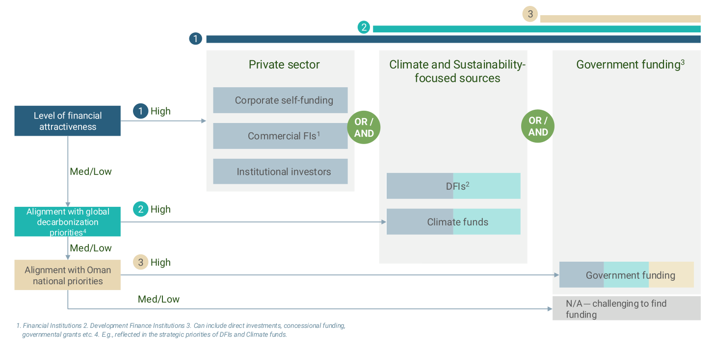
Oman’s post-2025 monitoring, reporting, and verification (MRV) and transparency arrangements for mitigation are supported by integrated national digital systems that support: (i) robust domestic emissions and mitigation tracking and (ii) efficient preparation of UNFCCC reports under the ETF.
These arrangements are designed to ensure IPCC-aligned data structuring, consistent quality assurance and quality control (QA/QC), and traceable evidence to support national reporting, NDC tracking, and carbon market participation.
ONZC operates the Meezan platform, which is aligned with IPCC categorization and methodological guidance. The platform enables standardized reporting and tracking of emissions by sector and gas, supporting the collection of activity data and emissions information from national stakeholders. Data are collected from relevant entities on a periodic basis and submitted through the platform, which supports automated calculation workflows and structured documentation to generate mitigation-relevant emissions datasets and track decarbonization measures. Submissions are subject to validation by the ONZC, ensuring consistency, completeness, and methodological integrity through a multi-tiered validation approach embedded within ONZC’s internal governance framework. Projects and measures are tracked through their full lifecycle, from design through implementation, allowing progress monitoring against sector pathways and national mitigation objectives.72
In parallel, EA operates the Munakh platform to digitalize Oman’s UNFCCC reporting processes and strengthen national transparency capacities. Munakh supports data entry, QA/QC workflows, evidence management, and report generation to facilitate preparation of national reports and datasets required under the ETF. This includes enabling functions to support: (i) compilation of the national inventory and structured submission through the Common Reporting Tables (CRTs); (ii) NDC tracking through the Common Tabular Formats (CTFs), including mitigation actions and progress information as applicable; and (iii) additional functionality to support finance tracking and adaptation-related reporting, where relevant to national transparency mandates.73
While national-level targets are presented in this NDC, sectoral emissions reduction targets will be cascaded internally and monitored through a dedicated KPI framework. These indicators are mapped against each stakeholder’s pipeline of decarbonization projects and aligned with their respective implementation strategies. Indicators include both quantitative metrics, such as emissions reduced (tCO2e), as well as qualitative assessments of progress toward implementation milestones.
Meezan and Munakh are implemented in alignment so that ONZC's domestic emissions and mitigation tracking and EA's ETF reporting processes draw on consistent IPCC sector and gas mapping, standardized data definitions, and compatible QA/QC checks. Shared reconciliation processes align assumptions, emission factors, calculation logic, and aggregation methods where datasets overlap, supported by traceable documentation and version control. This enables the same underlying information to support NDC progress tracking, inventory reporting readiness (CRTs), tabular NDC reporting (CTFs), and carbon market-related reporting elements, as applicable.
The ONZC was established on 1 December 2024 pursuant to Ministerial Decision 35/2024, based on Royal Directives to lead and coordinate national climate change mitigation activities in the Sultanate of Oman. Its mandate includes, among others, the management and approval of applications for carbon and hydrogen certificates, the registration and regulation of their domestic trading, and related international coordination, in coordination with the MoF and the EA, in accordance with their respective statutory mandates and the applicable approval requirements prior to issuance.
The Oman Carbon Market Framework, developed and issued under the mandate of ONZC, constitutes the principal institutional and operational framework supporting the operationalization of cooperative approaches under Article 6.2 and the mechanism under Article 6.4 of the Paris Agreement in Oman, including the national Oman Carbon Registry and national procedures for authorization, tracking and reporting. ONZC acts as Oman's designated national authority (DNA) for Article 6.2 and 6.4, implementing these arrangements in close institutional coordination with the EA and with the MoF on financial and fiscal matters as applicable. For voluntary carbon markets, projects are authorized in accordance with the Oman Carbon Market Framework and national authorization procedures, and Letters of Authorization (LoAs) for the export and international use of carbon credits shall be issued by ONZC in coordination with the EA and the MoF and in accordance with the required national approval procedures prior to issuance.
The implementation of Oman's NDC may be affected by the cross-border effects of climate-related trade and regulatory measures adopted by major trading partners, commonly referred to as the impacts of the implementation of response measures. These include the Carbon Border Adjustment Mechanism (CBAM) and a set of European Union sustainability and due-diligence frameworks, namely the Corporate Sustainability Due Diligence Directive (CSDDD), the Corporate Sustainability Reporting Directive (CSRD), and the Ecodesign for Sustainable Products Regulation (ESPR). While these measures are applied within the jurisdictions that adopt them, their effects extend to third countries through trade, investment, and global supply chains.
For Oman, the sectors most exposed are the energy-intensive and export-oriented industries central to economic diversification under Oman Vision 2040, including aluminum and its derivatives, petrochemicals and plastics, and iron and steel. Where such measures are designed or applied without sufficient consideration of national circumstances, they may raise compliance and production costs, affect the competitiveness of Omani exports, influence investment signals, and constrain the effective implementation of nationally determined mitigation actions aligned with sustainable development priorities. These effects also carry institutional, technical, human-capital, and data-readiness implications for national entities and exporting companies.
Oman continues to engage on the impacts of the implementation of response measures within the relevant UNFCCC processes, consistent with the principle of common but differentiated responsibilities and respective capabilities (CBDR-RC). In parallel, and recognizing that these frameworks are already being applied, Oman is strengthening national readiness through emissions measurement and reporting, product-level carbon accounting, value-chain traceability, and alignment with international sustainability standards, so that response measures can be managed as a resilience-and-competitiveness matter rather than a barrier to trade. The broader diversification and competitiveness dimensions of this agenda are addressed in Section 3.4.
|
1 |
Quantifiable information on the reference point (including, as appropriate, a base year) |
|||
|
A |
Reference year(s), base year(s), reference period(s) or other starting point(s); |
Base year: 2024 Implementation period: 2025-2035 (single-year target in 2035). |
||
|
B |
Quantifiable information on the reference indicators, their values in the reference year(s), base year(s), reference period(s) or other starting point(s), and, as applicable, in the target year; |
Reference indicator: national total GHG emissions (CO2e, 100-yr GWP). Base-year value (2024): 93.6 MtCO2e, compiled using IPCC 2006 methods with QA/QC and consolidated in the Meezan platform. Target-year value: Unconditional absolute reduction (7% of 93.6):
|
||
|
C |
For strategies, plans and actions referred to in Article 4, paragraph 6, of the Paris Agreement, or policies and measures as components of NDCs where paragraph 1(b) above is not applicable, Parties to provide other relevant information; |
Not applicable. The NDC is quantified against a base-year emissions indicator as per 1(b). |
||
|
D |
Target relative to the reference indicator, expressed numerically, for example in percentage or amount of reduction; |
By 2035, reduce national total GHG emissions by 33% relative to 2024 (7% unconditional; 26% conditional on international support, technology, and capacity). |
||
|
E |
Information on sources of data used in quantifying the |
Sector |
Area |
Data sources and Notes |
|
reference point(s); |
Energy |
Oil & Gas production |
|
|
|
Flaring |
annual reports |
|||
|
Fugitives / Venting |
|
|||
|
LNG fuel use |
|
|||
|
Petroleum refining |
records |
|||
|
- |
Transport |
Ministry of Transport Communications and Information Technology (MTCIT) and fuel import data from Customs. |
||
|
- |
Buildings |
Ministry of Housing and Urban Planning |
||
|
Industrial Processes |
Petrochemical industry |
Company submissions from cement, steel, |
||
|
and Product |
Cement |
aluminum and |
||
|
Use |
Aluminum |
chemicals sectors |
||
|
Iron & Steel |
||||
|
Methanol |
||||
|
Urea & ammonia |
||||
|
Other industry |
||||
|
Agriculture |
Land |
Ministry of Agriculture, |
||
|
and Land Use |
Livestock |
Fisheries, and Water |
||
|
Waste |
Non CO2 Sources on Land Incineration and Open Burning of Waste |
Resources for livestock and Crop activity data, as well as National statistics reports.
|
||
|
F |
Information on the circumstances under which the Party may update the values of the reference indicators. |
Oman may update the values of its reference indicators when improved data, methods, or activity information become available through the Munakh platform or subsequent BTR submissions. Updates may also occur following the adoption of new IPCC guidelines, GWP values, or national recalculations to ensure time-series consistency. Any recalculated values or methodological revisions will be transparently reported and documented in the corresponding BTR. |
||
|
2 |
Time frames and/or periods for implementation. |
|||
|
A |
Time frame and/or period for implementation, including start and end date, consistent with any further relevant decision adopted by the CMA; |
The implementation period for Oman’s NDC extends from 2025 to 2035, in line with the common time frames adopted under Decision 6/CMA.3. Progress will be tracked through Biennial Transparency Reports and national monitoring updates. |
||
|
B |
Whether it is a single-year or multi-year target, as applicable |
Oman’s NDC includes a single-year target, set for 2035, representing the national emission level to be achieved at the end of the implementation period. |
||
|
3 |
Scope and coverage |
|||
|
A |
General description of the target; |
Oman’s NDC 3.0 presents an absolute emissions reduction target of 33 percent by 2035 relative to 2024 levels (7% unconditional and 26% conditional on international support). The target encompasses all major emitting sectors |
||
|
B |
Sectors, gases, categories and pools covered by the nationally determined contribution, including, as applicable, consistent with IPCC guidelines; |
The NDC covers the following sectors in line with the 2006 IPCC Guidelines: |
||
|
||||
|
C |
How the Party has taken into consideration paragraphs 31(c) and (d) of decision 1/CP.21; |
Oman’s NDC covers all significant emitting sectors and gases and reflects its highest possible ambition given national circumstances. No key category has been excluded; any temporary data gaps will be addressed through methodological improvements reported in future BTRs. |
||
|
D |
Mitigation co-benefits resulting from Parties’ adaptation actions and/or economic diversification plans, including description of specific projects, measures and initiatives of Parties’ adaptation actions and/or economic diversification plans. |
Refer to section 3.4 |
||
|
4 |
Planning process Information on the planning processes that the Party undertook to prepare its NDC and, if available, on the Party’s implementation plans; |
|||
|
A (i) |
Domestic institutional arrangements, public participation and engagement with local communities and indigenous peoples, in a gender-responsive manner; |
For domestic institutional arrangements supporting NDC preparation and implementation, refer to:
|
||
|
A (ii) |
Contextual matters- national circumstances |
Refer to Section 1 (National Context), specifically Sections 1.2–1.4. |
||
|
A (iii) |
Best practices and experience related to the preparation of the NDC. |
The preparation of Oman’s NDC 3.0 built on lessons from previous national communications and transparency processes. It applied a whole-of-government approach, engaging more than 20 ministries, public entities, academia, and private-sector representatives through structured consultations and data calls coordinated by the EA. The process also drew on ONZC to consolidate mitigation-related inputs, including the 2024 emissions baseline and alignment with the updated |
||
|
national net-zero strategy, strengthening sectoral ownership of mitigation pathways. Data management and quality practices were reinforced through the use of national GHG platforms, enabling standardized data collection, validation, and QA/QC across sectors and supporting consistency between domestic tracking and UNFCCC reporting. International best practices reflected in UNFCCC guidance and peer experience across the GCC were considered to strengthen alignment with ETF requirements. This inclusive and data-driven approach strengthened ownership, improved data reliability, and ensured that the NDC reflects both national priorities and international standards. |
||||
|
B |
Specific information applicable to Parties, including regional economic integration organizations and their member States that have reached an agreement to act jointly under Article 4 (2) of the Paris Agreement |
Not applicable. Oman has prepared and will implement its NDC independently as a single Party to the Paris Agreement. No agreement to act jointly under Article 4(2) has been established with any regional economic integration organization or other Parties. |
||
|
C |
How the Party’s preparation of its nationally determined contribution has been informed by the outcomes of the global Stocktake, in accordance with Article 4, paragraph 9, of the Paris Agreeme |
Oman’s NDC 3.0 was informed by the findings of the first Global Stocktake (GST1), particularly the call to accelerate emission reductions before 2035 and strengthen adaptation and finance frameworks. The NDC incorporates GST1 guidance by expanding coverage of green hydrogen, energy efficiency, and carbon capture, and integrating adaptation actions with economic diversification. It also reflects the GST emphasis on transparency, inclusivity, and just transformation, aligning national priorities with the long-term Net Zero 2050 objective and the collective goals of the Paris Agreement |
||
|
D |
Each Party with a nationally determined contribution under Article 4 of the Paris Agreement that consists of adaptation action and/or economic diversification plans resulting in mitigation co-benefits consistent with Article 4, paragraph 7, of the Paris Agreement to submit information on: |
|||
|
D (i) |
How the economic and social consequences of response measures have been considered in developing the NDC. |
Refer to: Section 1.3 (Economy and Sectoral Diversification) for national circumstances shaping response measures: oil and gas dependence, diversification under Vision 2040, and investment and fiscal reforms. Section 4.6 (Response Measures) for the cross-border effects of trade and regulatory measures adopted by trading partners on Oman's energy-intensive, export-oriented sectors. Section 3.4 (Economic Diversification and Co-benefits) for how mitigation is framed alongside diversification outcomes such as jobs, competitiveness, and fiscal resilience. |
||
|
Section 4.3 (Finance Needs 2025–2035) for implementation feasibility and resource requirements, including the unconditional/conditional split and the role of international support. Section 1.4 (SDGs Progress in Oman) for the sustainable development framing linking climate action to national development priorities. |
||||
|
D (ii) |
Specific projects, measures and activities to be implemented to contribute to mitigation co-benefits, including information on adaptation plans that also yield mitigation co-benefits, which may cover, but are not limited to, key sectors, such as energy, resources, water resources, coastal resources, human settlements and urban planning, agriculture and forestry; and economic diversification actions, which may cover, but are not limited to, sectors such as manufacturing and industry, energy and mining, transport and communication, construction, tourism, real estate, agriculture, and fisheries. |
Refer to: Section 2.4 (Adaptation measures) and the sector tracking tables covering water, agriculture, fisheries, infrastructure/public services, tourism, and public health (Tables 5,7,8,9,10,11,12,13), including measures such as efficient water use and reuse, ecosystem/ catchment actions, resilient infrastructure and DRR, and nature-based coastal buffers that can yield mitigation co-benefits. Section 3.2 and Table 17 (Strategic Decarbonization Levers by IPCC Sector) for the mitigation measures and activities by sector. Section 3.4 and Table 18 (Economic diversification linkages with mitigation outcomes) for diversification actions with mitigation linkages (e.g., renewables and grid modernization, green hydrogen, circular economy/ resource efficiency, industrial upgrading, sustainable tourism/nature-based assets). |
||
|
5 |
Assumptions and methodological approaches, including those for estimating and accounting for anthropogenic GHG emissions and, as appropriate, removals: |
|||
|
A |
Assumptions and methodological approaches used for accounting for anthropogenic GHG emissions and removals corresponding to the Party’s NDC, consistent with decision 1/CP.21, paragraph 31, and accounting guidance adopted by the CMA; |
Oman accounts for anthropogenic GHG emissions and removals in accordance with Decision 1/CP.21, paragraph 31, and the accounting guidance adopted by the Conference of the Parties serving as the meeting of the Parties to the Paris Agreement (CMA). All estimates are prepared using the 2006 IPCC Guidelines for National GHG Inventories, ensuring consistency, comparability, and transparency. Emissions and removals are reported in CO2-equivalent using 100-year Global Warming Potentials (GWPs) from IPCC AR6 to maintain alignment with ETF reporting tables. |
||
|
B |
Assumptions and methodological approaches used for accounting for the implementation of policies and measures or strategies in the NDC; |
Refer to Section 3.2 (Key Mitigation Measures and KPI) and Section 4.4 (MRV Tracking Systems): implementation is tracked via a sectoral KPI framework and project lifecycle tracking, guided by Meezan platform for domestic emissions and mitigation tracking and Munakh platform for UNFCCC reporting workflows. |
||
|
C |
If applicable, information on how the Party will take into account existing methods and guidance under the Convention to account for anthropogenic emissions and removals, in accordance with Article 4, paragraph 14, of the PA, as appropriate; |
Oman continues to apply existing UNFCCC and IPCC methods to ensure full consistency between its national inventory and NDC accounting. Any methodological updates or refinements will be documented and explained in the BTRs. |
||
|
D |
IPCC methodologies and metrics used for estimating anthropogenic GHG emissions and removals; |
Estimates are based on the 2006 IPCC Guidelines and relevant 2019 Refinement where data allow. The metrics used are AR6 100-year GWPs for CO2, CH4, and N2O. Should Oman adopt updated metrics in future inventories, full time-series recalculation and transparent reporting will be applied to preserve consistency. |
||
|
E |
Sector-, category- or activity-specific assumptions, methodologies and approaches consistent with IPCC guidance, as appropriate, including, as applicable: |
|||
|
E (i) |
Approach to addressing emissions and subsequent removals from natural disturbances on managed lands; |
Oman applies the Managed Land Approach and does not currently exclude emissions from natural disturbances, given the limited extent of managed forests; any future exclusions will be transparently reported. |
||
|
E (ii) |
Approach used to account for emissions and removals from harvested wood products; |
Harvested Wood Products (HWP) emissions are considered immaterial in the current accounting and will be included once activity data become available. |
||
|
E (iii) |
Approach used to address the effects of age-class structure in forests; |
Not applicable at present; will be addressed when national forest monitoring systems allow for differentiation by age class. |
||
|
F |
Other assumptions and methodological approaches used for understanding the NDC and, if applicable, estimating corresponding emissions and removals, including: |
|||
|
F (i) |
How the reference indicators, baseline(s) and/or reference level(s), including, where applicable, sector-, category- or activity specific reference levels, are constructed, including, for example, key parameters, assumptions, definitions, methodologies, data sources and models used; |
The 2024 base year was selected using verified sectoral activity data compiled in the Meezan platform. Technology uptake assumptions, and energy-system models calibrated to national statistics and Vision 2040 scenarios. Refer to 3.2.A and 3.3.C for further details |
||
|
F (ii) |
For Parties with NDCs that contain non-GHG components, information on assumptions and methodological approaches used in relation to those components, as applicable; |
Oman’s NDC includes qualitative components, such as adaptation, resilience, and economic diversification, that are tracked through policy indicators and project implementation status rather than GHG metrics. Refer to Section 2 for further details |
||
|
F (iii) |
For climate forcers included in NDCs not covered by IPCC guidelines, information on how the climate forcers is estimated; |
None are included in Oman’s NDC at this stage. |
||
|
F (iv) |
Further technical information, as necessary; |
Refer to Section 3.3.A–B for Key Category Analysis and Uncertainty Analysis, and to Section 4.4 (MRV Tracking Systems) for QA/QC workflows, evidence management, and reconciliation processes. Detailed sectoral methodologies, emission factors, and activity data sources will be provided in Oman’s Biennial Transparency Report and accompanying inventory documentation as deemed appropriate. |
||
|
G |
The intention to use voluntary cooperation under Article 6 of the Paris Agreement, if applicable. |
Oman intends to engage in voluntary cooperation under Articles 6.2, 6.4, and 6.8 of the Paris Agreement. ONZC, as Oman's designated national authority for Articles 6.2 and 6.4, is responsible for the associated market-mechanism arrangements, including authorization (LoAs), registry operations, and corresponding adjustments. Non-market approaches under Article 6.8 fall under the EA. |
||
|
6 |
How the Party considers that its NDC is fair and ambitious in the light of its national circumstances: |
|||
|
A |
How the Party considers that its NDC is fair and ambitious in the light of its national circumstances; |
As a developing country Party under the Paris Agreement, Oman views its 2025–2035 NDC3.0 as both fair and ambitious, consistent with Articles 2(2) and 4(3) and reflecting its capabilities and responsibilities under the principle of Common but Differentiated Responsibilities and Respective Capabilities (CBDR-RC). The target of a 33% reduction by 2035 reflects a significant scaling up of ambition compared to the previous NDC (21%) and demonstrates Oman’s continued progression toward its Net Zero 2050 Strategy, in alignment with Vision 2040. Although Oman accounts for only around 0.2% of global emissions, this commitment represents a fair contribution to the Paris goals. The NDC builds on scientific inputs from the Meezan MRV Platform and IPCC AR6 data, ensuring methodological robustness and transparency. |
||
|
B |
Fairness considerations, including reflecting on equity; |
Oman’s NDC embodies equitable differentiation, balancing development needs with mitigation ambition. The unconditional 7% reduction reflects Oman’s domestic effort within available means, while the conditional 26% is linked to the provision of international finance, technology transfer, and capacity-building support under Articles 9–11 of the Paris Agreement. This two-tier structure reinforces the principle of equity and common but differentiated responsibilities (CBDR-RC), ensuring Oman’s contributions remain both fair and consistent with its national circumstances and sustainable development priorities. |
||
|
C |
How the Party has addressed Article 4, paragraph 3, of the Paris Agreement; |
Oman’s NDC3.0 (2025–2035) demonstrates clear progression in both scale and scope compared to its previous NDC (2021–2030), which targeted a 21% reduction (7% unconditional and 14% conditional) by 2030. The updated NDC now commits to a 33% reduction by 2035 (7% unconditional and 26% conditional), reflecting a significant scaling up of ambition consistent with Article 4, paragraph 3 of the Paris Agreement. This enhancement builds on improved data from the national Meezan platform. Integrating adaptation and mitigation co-benefits. This advancement fulfills the requirement of Article 4(3) for successive NDCs to represent progression and reflect the highest possible ambition. |
||
|
D |
How the Party has addressed Article 4, paragraph 4, of the Paris Agreement; |
Consistent with Article 4(4), Oman, as a developing country Party, continues to strengthen its efforts toward emission reductions over time. The NDC 3.0 establishes such a target while recognizing that unconditional measures rely on domestic resources and that conditional measures require international support, finance, and technology transfer. Additionally, Oman’s latest NDC reflects a methodological enhancement by shifting from a BAU approach to a base-year (2024) framework. This shift strengthens transparency and enables more accurate tracking of progress in line with Oman’s national capabilities and evolving data systems. |
||
|
E |
How the Party has addressed Article 4, paragraph 6, of the Paris Agreement |
Not applicable |
||
|
7 |
How the NDC contributes towards achieving the objective of the Convention as set out in its Article 2: |
|||
|
A |
How the NDC contributes towards achieving the objective of the Convention as set out in its Article 2; |
Oman’s NDC 3.0 contributes directly to the ultimate objective of the UNFCCC, the stabilization of GHG concentrations at a level that prevents dangerous anthropogenic interference with the climate system, by establishing a reduction target of 33% by 2035. It advances both mitigation and adaptation through integrated actions that promote energy diversification, sustainable land management, and resilient infrastructure. |
||
|
B |
How the NDC contributes towards Article 2, paragraph 1(a), and Article 4, paragraph 1, of the PA |
The NDC contributes to Article 2(1)(a) of the Paris Agreement by strengthening Oman’s contribution to the global effort to hold the temperature increase well below 2 °C and pursue efforts to limit it to 1.5 °C. It further fulfills Article 4(1) by reflecting Oman’s highest possible ambition in line with national circumstances, progressively moving toward emission reductions. Oman is also developing domestic carbon market frameworks and may utilize Article 6 cooperation to enhance ambition. By pursuing these actions, Oman’s NDC helps redirect financial flows toward low-GHG, climate-resilient development, in line with Article 2.1(c) of the Paris Agreement, thus strengthening the global response to climate change. |